← アプリにもどる写真・路線の出典
確認日：2026-09-22（広電5200形・岩徳線キハ40系は2026-09-24、車両カードの入れかえ分は2026-09-27、錦川鉄道のNT3000形は2026-09-30、SLやまぐち号のC57形は2026-10-02、ふくやまの Red Wing・ラ・マル・マリンライナーは2026-10-03、新幹線のN700A・みずほ・さくら・ひかりレールスター・500系は2026-10-04、0系・ドクターイエロー・N700S・E5系はやぶさは2026-10-05、813系・DENCHAは2026-10-07、821系・EF510形300番台・883系ソニックは2026-10-08、800系・くまモンアドベンチャー号は2026-10-13、200系・E8系・E6系・H5系は2026-10-15、7200系・瀬戸大橋アンパンマントロッコは2026-10-18、E7系・E2系あさま・East i・W7系は2026-10-20、521系・683系8000番台・225系・281系はるか・321系・683系4000番台は2026-10-25、323系・221系・223系・スーパーレールカーゴ M250系は2026-10-28）。鉄道好きの家庭向け非公式学習アプリです。JR各社・撮影者との提携を示すものではありません。車両写真の著作権は各権利者に帰属します。
路線図
大阪環状線 全線・JRゆめ咲線 全線（2026-10-28 追加。駅順は JR西日本 区間時刻表 大阪環状線 と JRゆめ咲線、読みは JRおでかけネットの駅情報〔玉造など各駅〕）／北陸本線 敦賀〜近江塩津・湖西線 全線・JR京都線 山科〜大阪（2026-10-25 追加。駅順は JR西日本 区間時刻表 北陸本線（琵琶湖線）（大阪〜京都／米原〜近江今津〜敦賀）〔北陸本線・湖西線〕と 琵琶湖線・JR京都線・JR神戸線（米原〜大阪〜姫路）〔JR京都線〕、読みは JRおでかけネットの駅情報〔堅田など各駅〕）／北陸新幹線 大宮〜敦賀（2026-10-20 追加。駅順とかがやきの停車駅は JR西日本 区間時刻表 北陸新幹線、読みは JR東日本の時刻表〔熊谷〜上越妙高〕と JRおでかけネットの駅情報〔糸魚川〜敦賀〕）／東北新幹線 東京〜新青森・北海道新幹線 新青森〜新函館北斗（2026-10-15 追加）／九州新幹線 博多〜鹿児島中央（2026-10-13 追加）／鹿児島本線 博多〜小倉（博多〜香椎は2026-10-07、香椎〜小倉は2026-10-08 追加）・香椎線 香椎〜西戸崎（2026-10-07 追加）／山陽新幹線 博多〜新大阪（2026-10-04 追加）／東海道新幹線 新大阪〜東京（2026-10-05 追加）／山陽本線 新山口〜岡山（徳山〜新山口は2026-10-02、三原〜岡山は2026-10-03 追加）／瀬戸大橋線 岡山〜坂出（岡山〜児島は2026-10-03、児島〜坂出は2026-10-18 追加）・予讃線 坂出〜高松（2026-10-18 追加）／可部線 全線／呉線 全線／岩徳線 全線／芸備線 広島〜下深川／錦川清流線 全線（2026-09-30 追加）。駅順・接続は以下の資料によります。2026-10-04 から、駅の位置・線路の形・海岸線は本物の地図のとおりに描いています（およそ1km＝50の縮尺。新岩国は清流新岩国と見分けられるよう少し離し、止まらない駅の上を線が通るところは約300mよけています）。駅の位置と線路の形は「国土数値情報（鉄道データ N02-25）」（国土交通省、CC BY 4.0。2026-10-20 に N02-23 から切りかえ。金沢〜敦賀は2024年の開業なので N02-25 から）を、陸と海岸線と湖（琵琶湖など。2026-10-05 から）は「地球地図日本 第2.2版」（国土地理院、国土地理院コンテンツ利用規約）を加工して作成しました（形を省いて地図の座標に変換）。実際の運行情報・停車パターンは扱いません。芸備線は下深川から先、山陽本線は新山口から西と岡山から東、瀬戸大橋線の宇多津へ向かう線、予讃線の坂出から西（丸亀・松山方面）、高徳線、山口線・宇部線・福塩線・伯備線・宇野みなと線・津山線・桃太郎線・赤穂線、鹿児島本線の小倉から先（門司港方面）と博多から南（鳥栖方面）、日豊本線、折尾で分かれる筑豊本線（若松線・福北ゆたか線）、香椎線の香椎から宇美方面、東京で分かれる上越・北陸新幹線（大宮から）・山形新幹線（福島から）・秋田新幹線（盛岡から）、新函館北斗から先は未収録です。北陸本線の近江塩津から長浜・米原方面、敦賀から出る小浜線、山科から大津・米原方面の琵琶湖線、京都から出る奈良線・嵯峨野線、大阪から先のJR神戸線、天王寺から先の阪和線・大和路線、京橋から先の学研都市線も未収録です。2027年開業予定の JR貝塚駅（箱崎〜千早）は入れていません。錦川清流線の清流みはらし駅（ふだんの列車は止まらない臨時駅）は入れていません。
JR西日本 広島エリア駅ナンバー路線図
JR西日本 岩徳線 2235D 駅順
錦川鉄道 時刻表（令和8年3月14日改正、錦川清流線の駅順）・各駅紹介（2026-09-30 確認）
JR西日本 沿線点描 錦川清流線 川西駅～錦町駅（行波・北河内・南桑の読み。そのほかの駅の読みは Wikipedia の各駅の記事と乗換案内で確認。根笠は乗換案内などでは「ねがさ」だが、錦川鉄道の各駅紹介の表記〔nekasa〕と地元での読みに合わせて「ねかさ」とした）
JR西日本 呉線 区間時刻表
JR西日本 山陽線 駅順（寺家・新白島含む）
JR西日本 山陽線 徳山〜岩国 駅順
JR西日本 山陽本線 区間時刻表（新山口〜徳山の駅順）・JRおでかけネットの各駅の駅情報（新南陽〜新山口の読み。戸田は「へた」、富海は「とのみ」。2026-10-02 確認）
JR西日本 山陽本線 区間時刻表（三原〜岡山の駅順）・JR西日本 瀬戸大橋線・宇野みなと線 区間時刻表（岡山〜児島の駅順）・JRおでかけネットの各駅の駅情報（糸崎〜岡山・大元〜児島の読み）・JR西日本 岡山エリア駅ナンバー路線図（瀬戸大橋線の色。2026-10-03 確認）・同じ区間時刻表（児島〜坂出〜高松の駅順）・JR四国 駅別時刻表（坂出〜高松の読み。2026-10-18 確認）
JR西日本 区間時刻表 新幹線（鹿児島中央〜博多〜東京）（山陽新幹線の駅順）・JRおでかけネットの各駅の駅情報（博多・小倉・新下関・厚狭・新岩国・東広島・新尾道・相生・姫路・西明石・新神戸・新大阪の読み。2026-10-04 確認）
JR東海 列車走行位置（東海道新幹線の駅順）・JR東海 Maps of station layouts（東海道新幹線の駅名のローマ字。読みの確認）・JRおでかけネットの各駅の駅情報（京都・米原の読み。2026-10-05 確認）
JR東海ツアーズ 東海道新幹線の停車駅まとめ（のぞみの停車駅：東京・品川・新横浜・名古屋・京都・新大阪。一部の列車は新神戸・岡山より西へ直通。2026-10-12 確認）。山陽新幹線で のぞみが どの列車も止まる駅（新神戸・岡山・広島・小倉・博多。姫路・福山・徳山・新山口は列車によって止まる）は、JR各社の時刻表をもとにした案内サイトによります。アプリの「のぞみ」は、どの列車も止まる11駅だけに止まります。
九州新幹線の みずほ が どの列車も止まる駅（博多・熊本・鹿児島中央。久留米・川内は列車によって止まる）は、JR九州の時刻表をもとにした案内サイト（jr-shinkansen.net）によります（JR九州の今の停車駅の一覧は見つからなかった。2026-10-13 確認）。アプリの「みずほ」は、この3駅だけに止まります。
山陽本線の 快速「シティライナー」の停車駅（岩国・和木・大竹・玖波・大野浦・宮島口・五日市・横川・広島。土休日の運転）は、JR西日本 2026年3月14日ダイヤ改正（中国エリア）の土休日「うれしート」の設定時刻によります（2026-10-31 確認）。アプリの「シティライナー」は、この9駅に止まります。平日の朝の「通勤ライナー」は止まる駅がちがいます。
JR九州 駅別時刻表 鹿児島本線・香椎線（博多〜西戸崎の駅順）・JR九州 駅情報（吉塚・箱崎・千早・香椎・和白・奈多・雁ノ巣・海ノ中道・西戸崎の読み。九産大前〜西小倉の23駅の駅順と読みは駅別時刻表で2026-10-08 確認。2026-10-07 確認）
JR九州 駅別時刻表 九州新幹線（博多〜鹿児島中央の駅順と、新鳥栖・久留米・筑後船小屋・新大牟田・新玉名・熊本・新八代・新水俣・出水・川内・鹿児島中央の読み。2026-10-13 確認）
JR東日本 時刻表 東北・北海道新幹線の駅一覧（東京〜新青森の駅順と読み）
JR北海道 駅の情報検索（奥津軽いまべつ・木古内・新函館北斗の読みと駅順）
カードをもらえる駅
獲得駅はゲーム上の到達目標です。写真の撮影地や車両の運行区間の境界を意味しません。写真は撮影当時の姿です。
227系0番台 Red Wing ― 玖波駅から最初の1区間を開通したとき
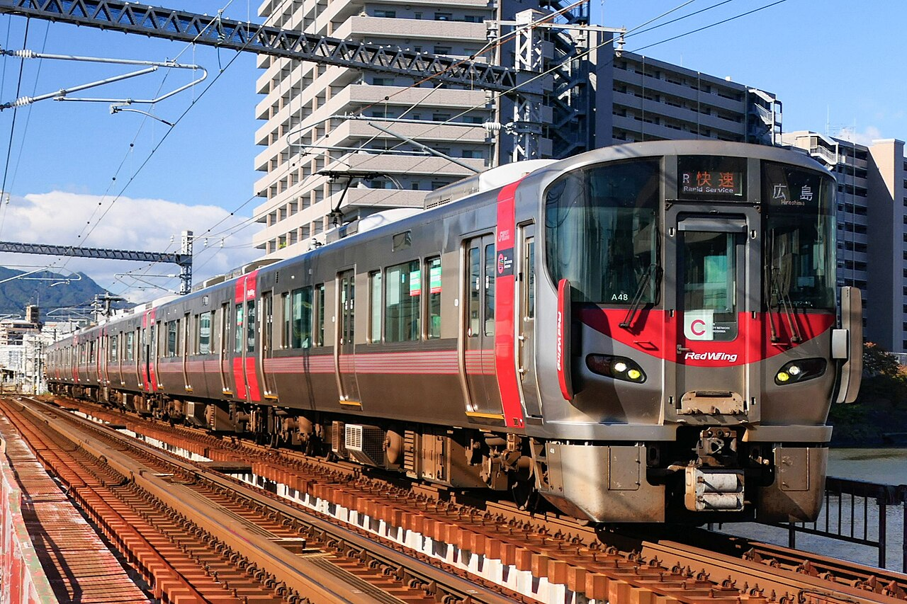
ひろしまエリアの赤い電車。山陽本線・呉線・可部線で活躍する227系だよ。
車両・地域の参考資料
写真：JRW Series227-0 A48.jpg
作者：MaedaAkihiko
原典 ／ CC0
変更：Wikimedia提供の縮小画像を使用。写真の描き換えなし。
写真説明：A rapid train "City Liner" bound for Hiroshima, led by the 227-0 series A48 formation, running between Itsukaichi Station and Shin-Inokuchi Station on the JR Sanyo Main Line.
TWILIGHT EXPRESS 瑞風 ― 宮島口駅
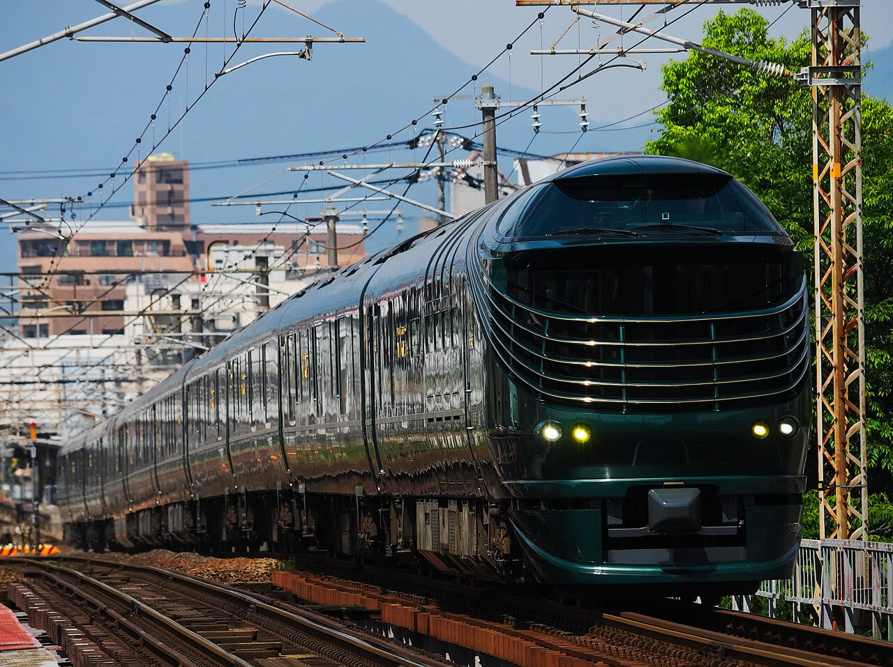
泊まりがけで旅をする豪華な寝台列車。ときどき山陽本線を走って、宮島口や岩国にも停まるよ。
TWILIGHT EXPRESS 瑞風 山陽コース（公式）
写真：JRW Kiha 87 Twilight Express Mizukaze 2018-05-27.jpg
作者：khws4v1
原典 ／ CC BY-SA 2.0
変更：Wikimedia提供の縮小画像（長辺1280px）を使用。トリミング・AI補正なし。
写真説明：JR West Kiha 87 Twilight Express Mizukaze
はなあかり ― 五日市駅
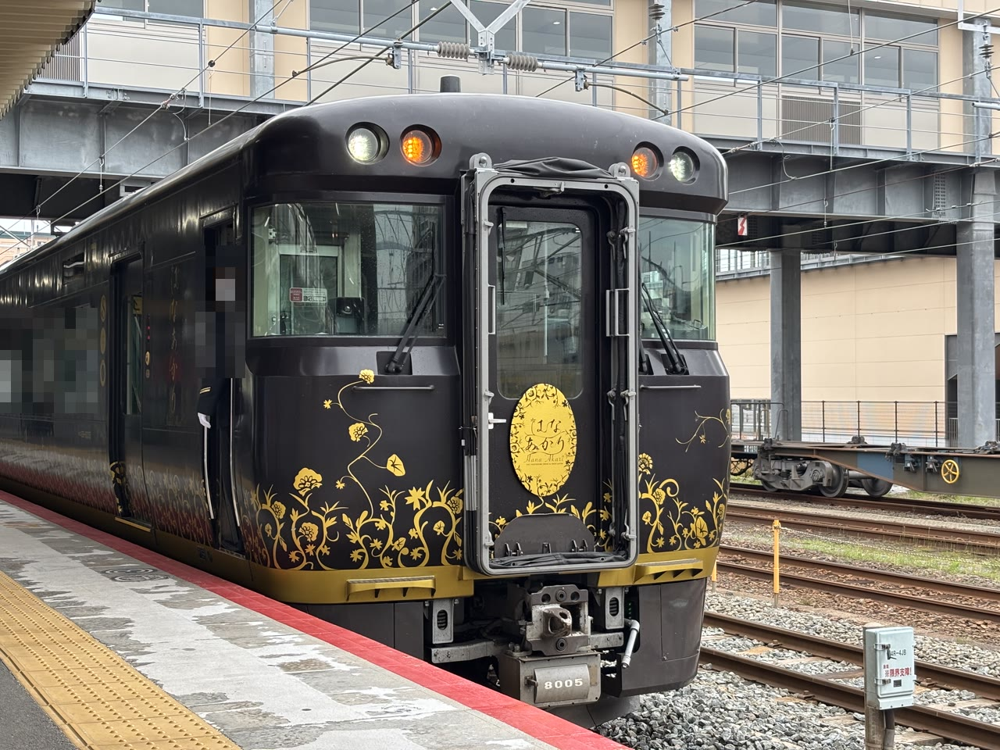
黒い車体に金色の花がえがかれた観光列車。2026年の春に、広島から宮島口を通って岩国まで走ったよ。
車両・運転区間の参考資料（マイナビニュース 2026年1月28日）
写真：家族撮影の はなあかり.jpg
作者：家族撮影
原典 ／ 家族提供写真
変更：撮影者提供の写真を長辺1280pxへ縮小し、写っている人（乗務員・乗客）にモザイク。撮影情報を削除。トリミング・AI補正・描き換えなし。
写真説明：駅に停車中の観光列車「はなあかり」（キハ189系8005）の正面
JR貨物 EF210形（ECO-POWER 桃太郎） ― 広島駅
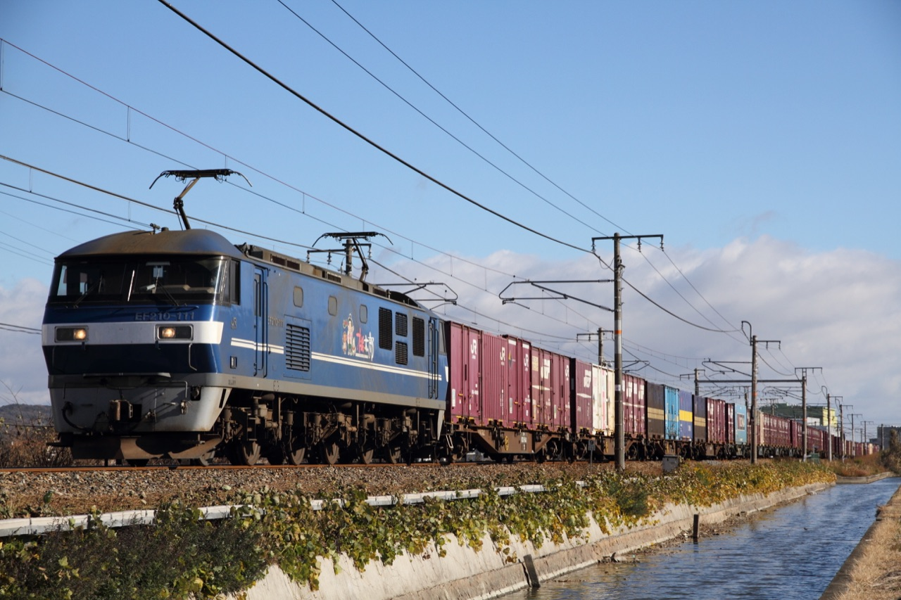
山陽本線で貨物列車を引く「ももたろう」。広島駅の近くには、貨物列車の駅もあるよ。
車両・地域の参考資料
写真：JRF EF210-111 20211218.jpg
作者：Mitsuki-2368
原典 ／ CC BY-SA 4.0
変更：長辺1280pxへ縮小・JPEG再圧縮。トリミング・描き換えなし。
写真説明：山陽本線 庭瀬〜中庄間を走行するEF210-111号機（キャラクターラッピング仕様）
JR貨物 EF210形300番台 ― 瀬野駅
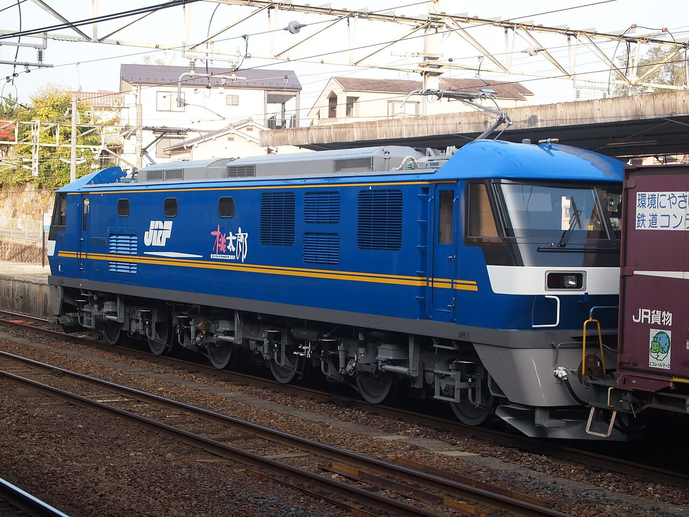
瀬野と八本松のあいだは急な坂道。重い貨物列車をうしろから押して助ける機関車だよ。「押し太郎」と呼ばれることもあるよ（ファンの呼び名）。
車両の参考資料（Wikipedia）
写真：EF210-306 Saijo 20151024.jpg
作者：kh ws
原典 ／ CC BY-SA 2.0
変更：Wikimedia提供の縮小画像（長辺1280px）を使用。トリミング・AI補正なし。
写真説明：JR Freight Class EF210-300 electric locomotive EF210-306 at the rear of a freight train at Saijo Station
227系0番台 カープ応援ラッピング（2026） ― 西条駅
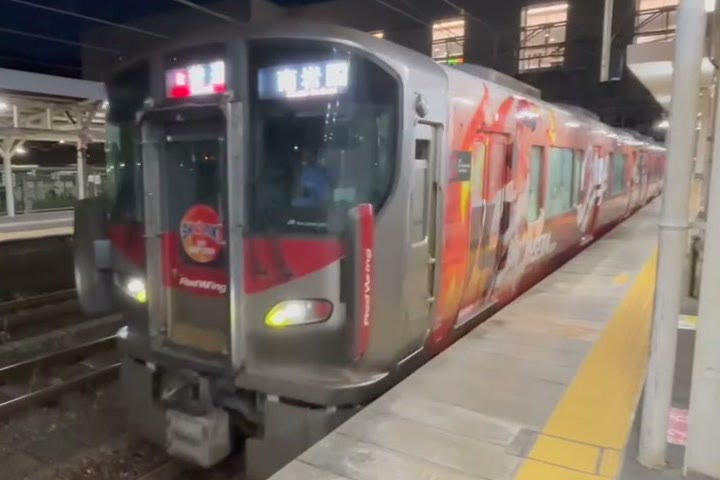
広島のプロ野球チーム、カープを応援する電車。2026年は山陽本線と呉線を走るよ。
JR西日本 カープ応援ラッピングトレイン2026
写真：家族撮影の カープ応援ラッピングトレイン（動画の1コマ）.jpg
作者：家族撮影
原典 ／ 家族提供写真
変更：撮影者提供の動画から1コマを切り出し、電車のまわりをトリミング。撮影情報なし。AI補正・描き換えなし。
写真説明：夜の駅に入ってくる227系のカープ応援ラッピングトレインの正面
227系500番台 Urara ― 三原駅
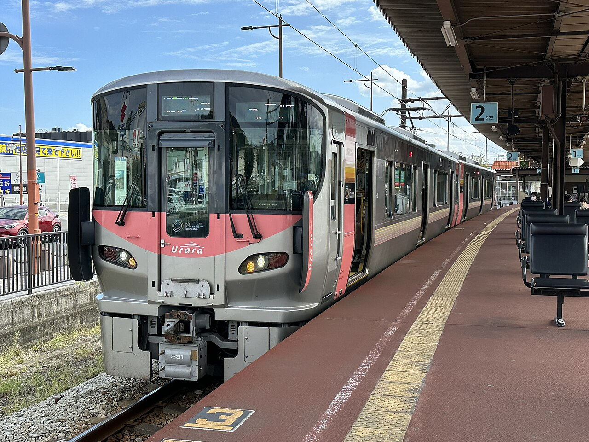
岡山・備後エリアの227系。三原まで来ると、Uraraの走るエリアにつながるよ。
車両・地域の参考資料
写真：227-500 series "Urara" at Uno Station.jpg
作者：Travelweb.au
原典 ／ CC0
変更：Wikimedia提供の縮小画像を使用。写真の描き換えなし。
写真説明：宇野駅に停車する227系500番台Urara
227系0番台 グリーンムーバーカラー ― 可部駅
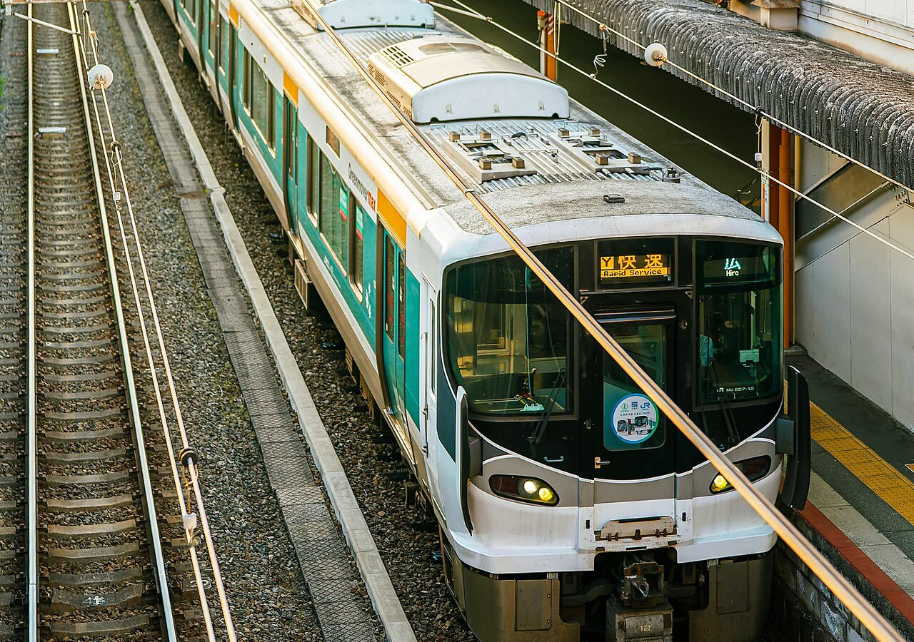
広電の路面電車「グリーンムーバーマックス」と色をとりかえっこした227系。可部線も走るよ。
JR西日本・広島電鉄 ラッピングコラボトレイン ／ railf.jp
写真：JRW-Series227-0 A12 Green Mover Max.jpg
作者：KageroYukikaze
原典 ／ CC BY-SA 4.0
変更：Wikimedia提供の縮小画像（1280×1920px）から、電車のまわりを横長（1280×900px）にトリミング。AI補正・描き換えなし。
写真説明：JR West 227-0 Series 3-car set A12 in Hiroshima Electric Railway "Green Mover Max" livery, Kure Station.
etSETOra（エトセトラ） ― 呉駅
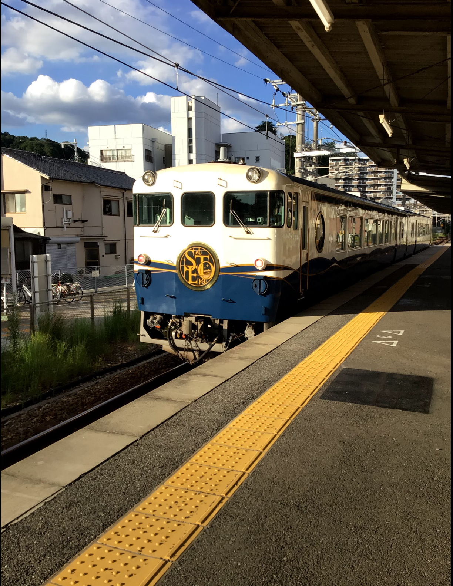
呉線を通って瀬戸内を旅する観光列車。海の青と、波の白をまとっているよ。
車両・地域の参考資料
写真：西広島駅を通過するetSETOra(2021年).jpg
作者：勇敢な夕刊
原典 ／ CC BY-SA 4.0
変更：Wikimedia提供画像を使用。トリミング・AI補正なし。
写真説明：西広島駅を通過するetSETOra
227系0番台 ばらのラッピング ― 竹原駅
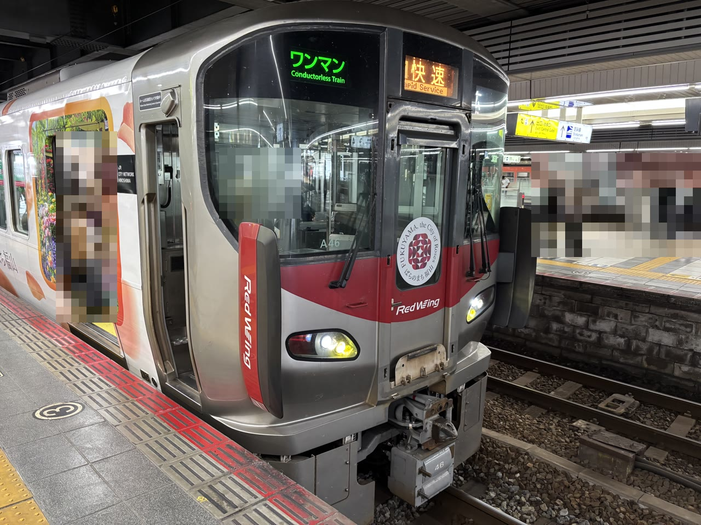
「ばらのまち」福山を紹介する電車。大きなばらと花びらがえがかれて、呉線を全部走るよ。
車両・運転区間の参考資料（railf.jp 2026年5月16日）
写真：家族撮影の 227系 ばらのラッピングトレイン.jpg
作者：家族撮影
原典 ／ 家族提供写真
変更：撮影者提供の写真を長辺1280pxへ縮小し、写っている人（乗客・ホームの人）にモザイク。撮影情報を削除。AI補正・描き換えなし。
写真説明：広島駅に停車中の227系A46編成（ばらのラッピングトレイン）の正面と側面
キハ40形（朱色） ― 下深川駅
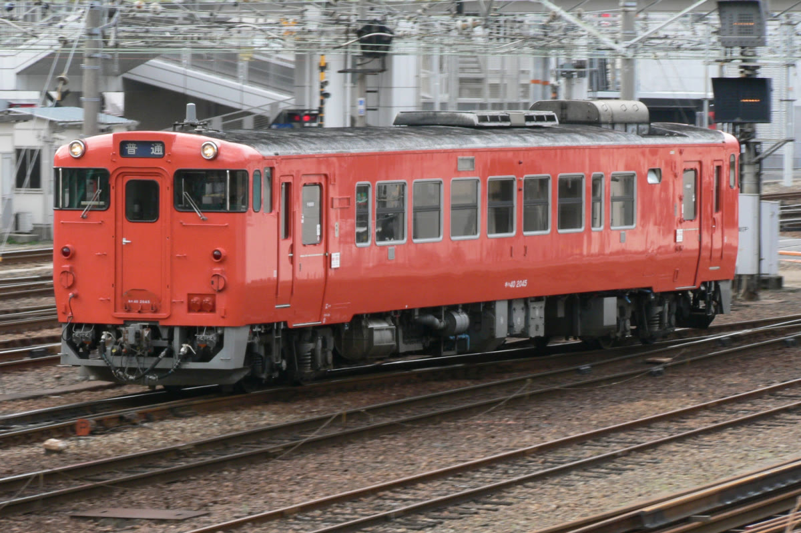
芸備線の広島〜三次を走るオレンジ色のディーゼル車。運転席が両方にあるから、1両でも走れるよ。写真の撮影場所は原典に書かれていません。
三次市 芸備線車両紹介
写真：JR West Kiha40 2045.png
作者：Hisagi
原典 ／ CC BY-SA 3.0
変更：Wikimedia提供画像をJPEGに変換。トリミング・AI補正なし。
写真説明：JR西日本、キハ40 2045（首都圏色）
キハ47形（朱色） ― 岩国駅
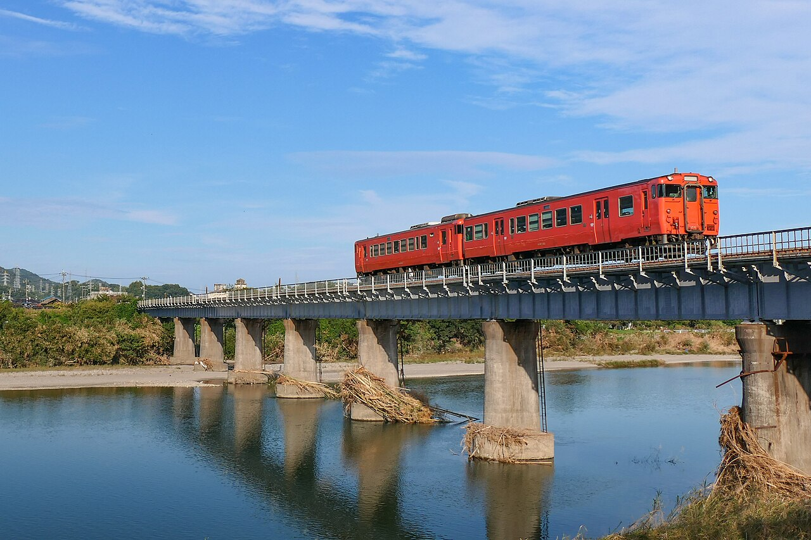
岩国駅で会えるオレンジ色のディーゼル車。運転席は片方だけ。写真は岩徳線で、錦川の鉄橋をわたるところだよ。
車両・地域の参考資料（写真の説明）
写真：JRW Gantoku-line Kiha47.jpg
作者：MaedaAkihiko
原典 ／ CC BY-SA 4.0
変更：Wikimedia提供の縮小画像（長辺1280px）を使用。トリミング・AI補正なし。
写真説明：A local train of JR West's Kiha 40 series 47 and 40 that crosses the Nishiki River between Nishi-Iwakuni Station and Kawanishi Station on the Iwantoku Line.
115系3000番台 ― 柳井駅
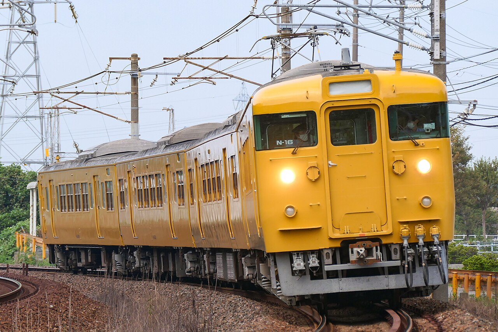
山陽本線で活躍してきた黄色い電車。写真は山口エリアの115系3000番台だよ。
車両・地域の参考資料
写真：JRW Series115-3000 N-16.jpg
作者：MaedaAkihiko
原典 ／ CC BY-SA 4.0
変更：Wikimedia提供画像を使用。トリミング・AI補正なし。
写真説明：A local train with the 115-3000 series N-16 formation that runs between Shin-Shimonoseki Station and Chofu Station on the Sanyo Main Line.
WEST EXPRESS 銀河 ― 光駅
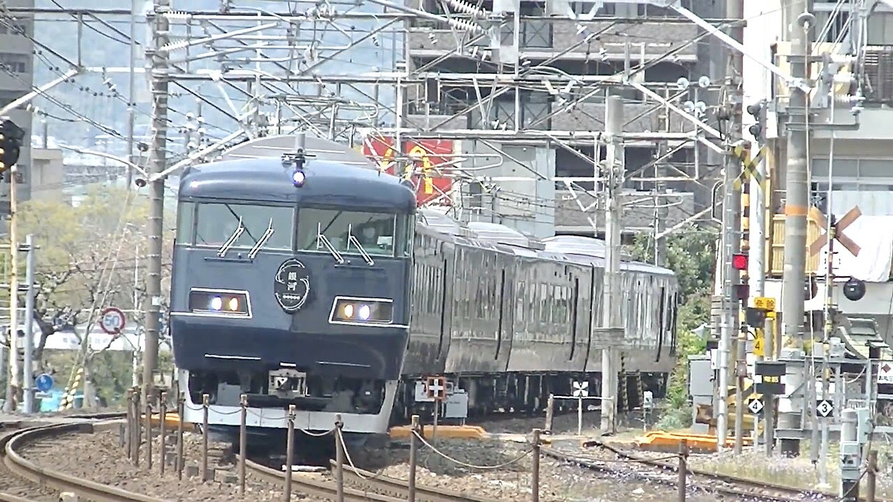
夜も走る観光列車。ときどき山陽本線を通って、下関まで行くよ。夜空のような濃い青色。
WEST EXPRESS 銀河 山陽コース（JRおでかけネット）
写真：JRW West Express Ginga Hiroshima 2020-04-16.jpg
作者：交通大臣 鉄道チャンネル
原典 ／ CC BY 3.0
変更：Wikimedia提供の縮小画像（長辺1280px）を使用。トリミング・AI補正なし。
写真説明：Luxury train West Express Ginga conducting staff training at Hiroshima Station, April 16, 2020.
227系500番台 Kizashi ― 徳山駅
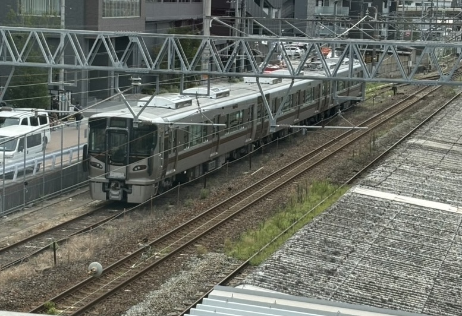
山口エリアの227系。山陽本線の岩国〜下関で運行する、黒と金色のKizashiだよ。
車両・地域の参考資料
写真：家族撮影の227系500番台 Kizashi.jpg
作者：家族撮影
原典 ／ 家族提供写真
変更：撮影者提供の写真をそのまま使用。AI補正・描き換えなし。
写真説明：線路上を走る227系500番台Kizashiを遠方から撮影した写真
NT3000形 せせらぎ号 ― 清流新岩国駅
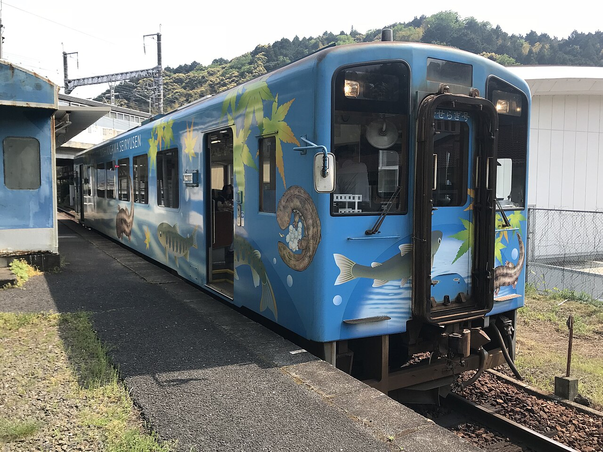
錦川清流線を走る4両のディーゼルカーの1両。「清流のブルー」の車体に、川の魚の絵。写真は清流新岩国駅に止まっている錦町行き。
錦川鉄道 車両紹介（4色のテーマ）・錦川鉄道NT3000形気動車（Wikipedia、愛称）（2026-09-30 確認）
写真：Train for Nishikicho Station at Seiryu-Shin-Iwakuni Station 2.jpg
作者：そらみみ
原典 ／ CC BY-SA 4.0
変更：Wikimedia提供の縮小画像（長辺1280px）を使用。トリミング・AI補正なし。
写真説明：清流新岩国駅に停車中の錦町行き錦川清流線列車
NT3000形 ひだまり号 ― 北河内駅
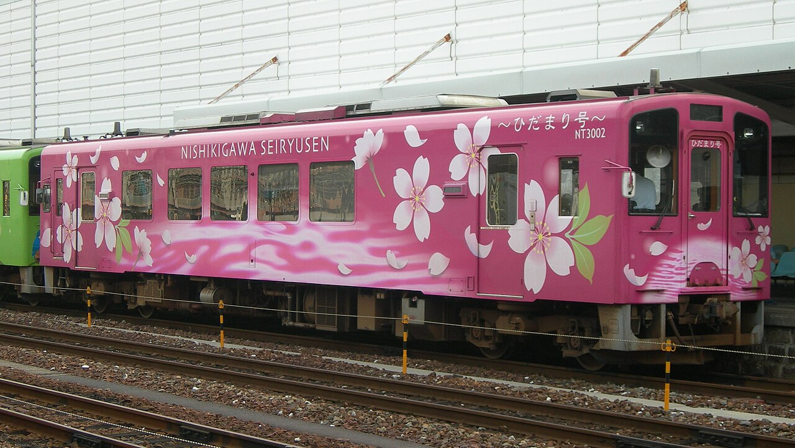
「桜のピンク」のNT3000形。車体いっぱいに桜の花。
錦川鉄道 車両紹介（4色のテーマ）・錦川鉄道NT3000形気動車（Wikipedia、愛称）（2026-09-30 確認）
写真：Nishikigawa Railway DMU NT3002.jpg
作者：Rsa
原典 ／ CC BY-SA 3.0
変更：Wikimedia提供の縮小画像（長辺1280px）を使用。トリミング・AI補正なし。
写真説明：錦川鉄道錦川清流線の所属車両：ひだまり号(NT-3000型)
NT3000形 こもれび号 ― 根笠駅
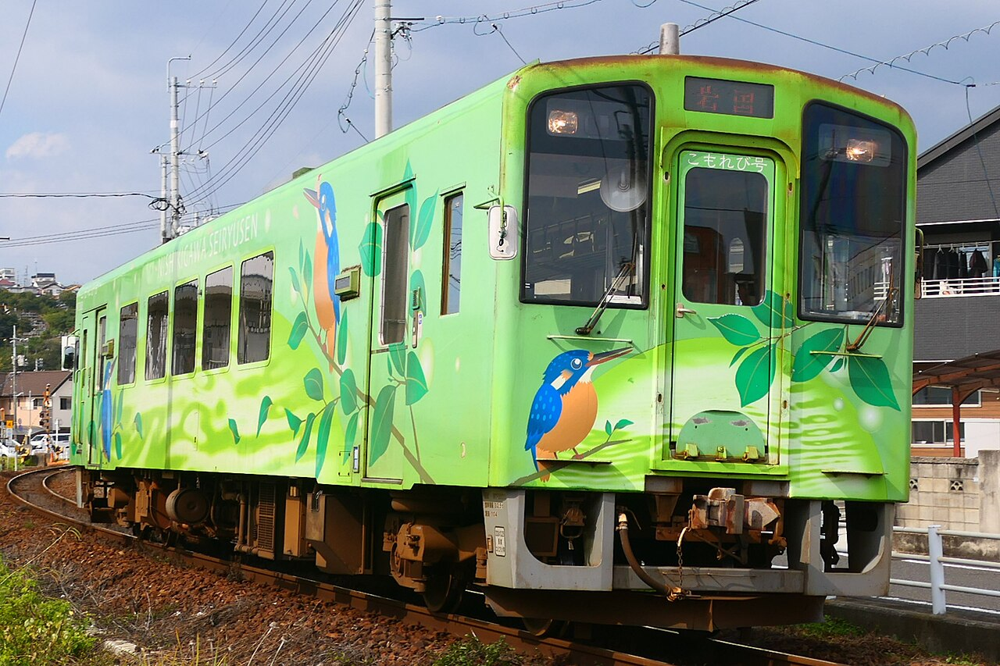
「森林のグリーン」のNT3000形。葉っぱとカワセミの絵。写真は岩徳線の西岩国〜岩国で撮影。
錦川鉄道 車両紹介（4色のテーマ）・錦川鉄道NT3000形気動車（Wikipedia、愛称）（2026-09-30 確認）
写真：Nishikigawa NT3000-3003.jpg
作者：MaedaAkihiko
原典 ／ CC0
変更：Wikimedia提供の縮小画像（長辺1280px）を使用。トリミング・AI補正なし。
写真説明：NT3000 series diesel railcar (NT-3003) of the Nishikigawa Seiryu Line, running between Nishi-Iwakuni Station and Iwakuni Station on the JR Gantoku Line.
NT3000形 きらめき号 ― 錦町駅
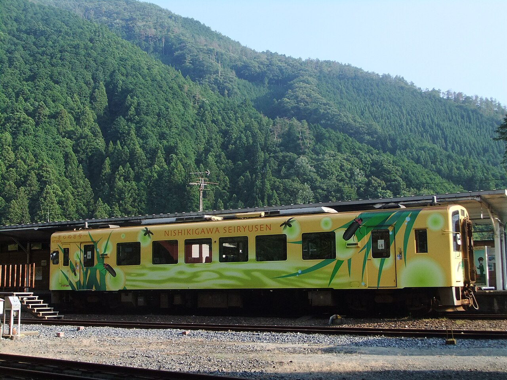
「蛍の光のイエロー」のNT3000形。蛍の絵。
錦川鉄道 車両紹介（4色のテーマ）・錦川鉄道NT3000形気動車（Wikipedia、愛称）（2026-09-30 確認）
写真：Nishikigawa Railway DMU NT3004.JPG
作者：TRJN
原典 ／ CC BY-SA 4.0
変更：Wikimedia提供の縮小画像（長辺1280px）を使用。トリミング・AI補正なし。
写真説明：NT-3004 きらめき号
SLやまぐち号 C57形1号機 ― 新山口駅
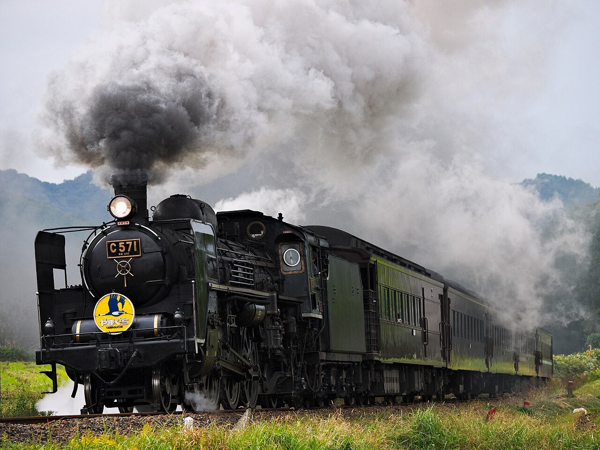
煙をはいて走る蒸気機関車（SL）。新山口駅から山口線の津和野駅まで、SL全盛期の客車を再現した35系客車を引いて走る。2026年10月3日からC57形が引く。写真は2017年、35系客車を引くC57形1号機。
JR西日本 SLやまぐち号の運転計画について（2026年10月～12月）・SLやまぐち号 公式サイト（C57形での運行）（2026-10-02 確認）
写真：SL Yamaguchi 2017 (26381048739).jpg
作者：khws4v1
原典 ／ CC BY-SA 2.0
変更：Wikimedia提供の縮小画像（長辺1280px）を使用。トリミング・AI補正なし。
写真説明：C571 + 35系
ふくやまの Red Wing（227系0番台）― 福山駅
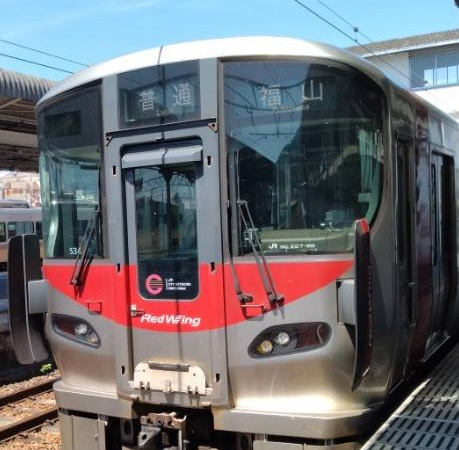
広島エリアの227系 Red Wing は、2016年3月26日のダイヤ改正から山陽本線の福山エリアにも入るようになった。写真は行き先が「普通 福山」の227系0番台（2023年）。運転画面は1枚目の Red Wing と同じ絵。
JR西日本 岡山支社 平成28年春ダイヤ改正について（「山陽本線の福山エリアに227系車両を投入」。2026-10-03 確認）
写真：227-0 普通福山行.jpg
作者：ひかり500号
原典 ／ CC BY-SA 4.0
変更：Wikimedia提供の元画像（459×914px）の上下を切り抜き（459×450px、車両の前の部分）。引き伸ばし・AI補正なし。
写真説明：Series 227 0 bound for Fukuyama
La Malle de Bois ラ・マル しまなみ ― 倉敷駅
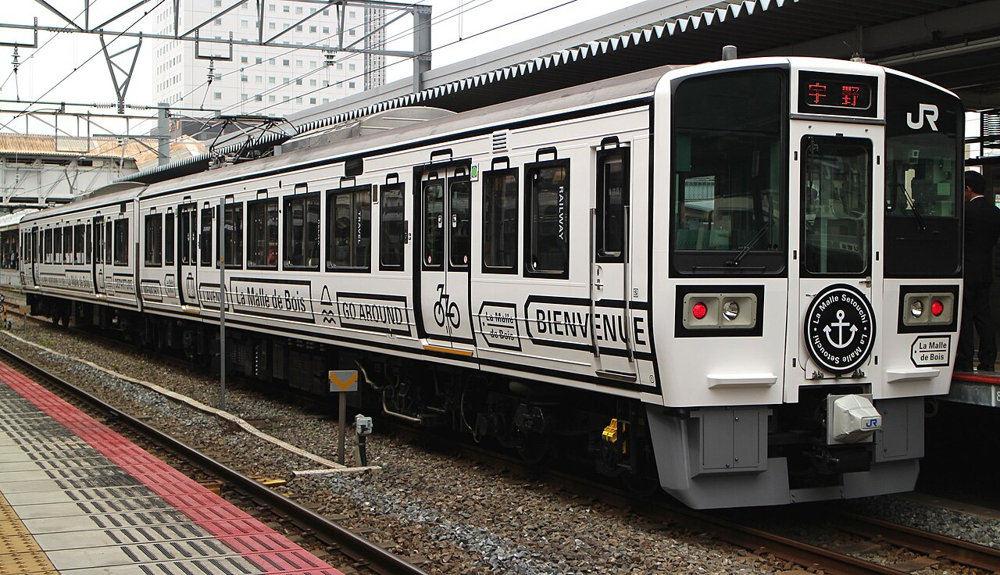
「旅支度をする特別な時間を楽しむ列車、走る旅の道具箱（トランク）」がテーマの観光列車（213系を改造）。自転車を4台積める。ラ・マル しまなみは岡山→倉敷→笠岡→福山→尾道→三原に停まる。
JRおでかけネット La Malle de Bois（2026-10-03 確認）
写真：JRW 213-7000 La Malle de Bois 20160410.jpg
作者：Rsa
原典 ／ CC BY-SA 3.0
変更：Wikimedia提供の縮小画像（長辺1280px）を使用。トリミング・AI補正なし。
写真説明：The JR West 213 series La Malle de Bois tourist train at Okayama Station
快速マリンライナー 5000系 ― 岡山駅
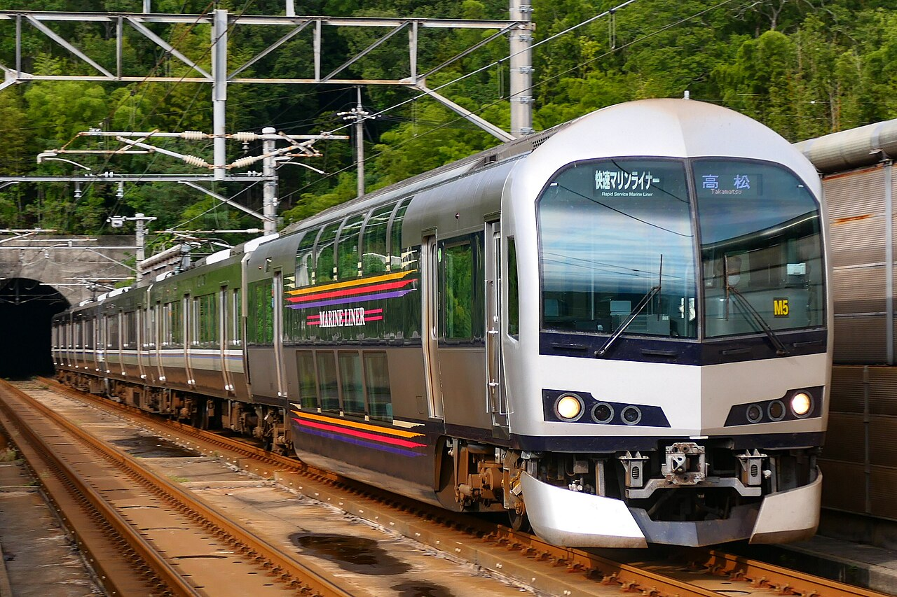
岡山と高松を結ぶ快速。先頭車両は2階建てで、2階のグリーン車からは瀬戸内海が見える（JR四国とJR西日本が共同で導入）。写真は木見駅に入る5000系 M5編成（2022年）。
JR四国 車両情報＜マリンライナー＞（2026-10-03 確認）
写真：JRS Series5000-M5 Marine-liner-41.jpg
作者：MaedaAkihiko
原典 ／ CC BY-SA 4.0
変更：Wikimedia提供の縮小画像（長辺1280px）を使用。トリミング・AI補正なし。
写真説明：Rapid "Marine Liner" No. 41 bound for Takamatsu, led by JR Shikoku 5000 Series M5 formation entering Kimi Station on JR West's Seto Ohashi Line.
N700A ― 新幹線の区間をはじめて開通したとき
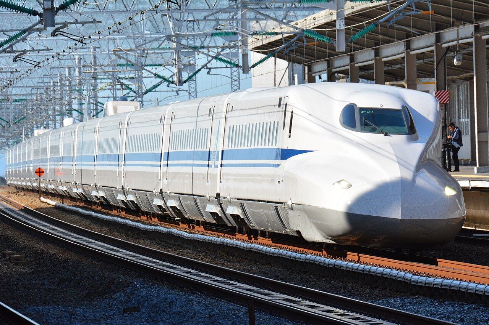
東海道新幹線と山陽新幹線を走る新幹線。山陽新幹線では最高300km/hで走るよ。写真は2019年のF21編成（JR西日本の4000番台）。
JR東海 車両のご案内 N700系・N700A（最高速度 東海道285km/h・山陽300km/h。2026-10-04 確認）
写真：Shinkansen N700-4000 F21 (49766090912).jpg
作者：Cheng-en Cheng from Taichung City, Taiwan
原典 ／ CC BY-SA 2.0
変更：Wikimedia提供の縮小画像（長辺1280px）を使用。トリミング・AI補正なし。
写真説明：JR West N700A (N700-4000 series) set F21, 2019-11-15
みずほ・さくら N700系8両 ― 博多駅
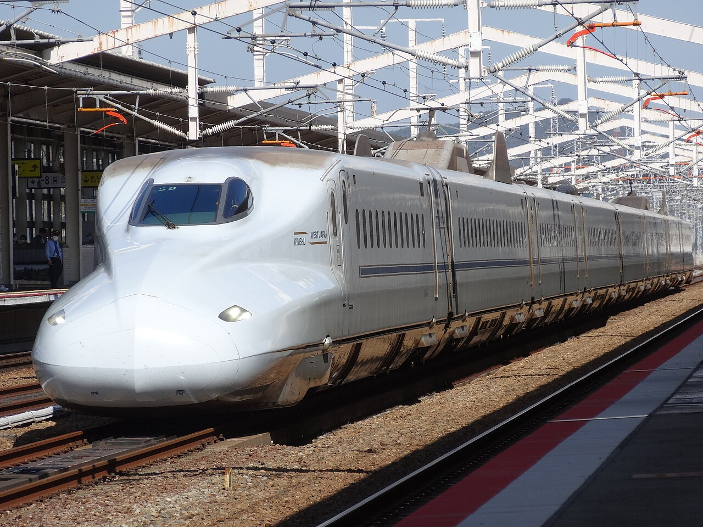
新大阪と九州の鹿児島中央を結ぶ「みずほ」「さくら」。九州新幹線の急な坂をのぼるため、8両ぜんぶにモーターがついているよ。写真は姫路駅のS8編成。
JRおでかけネット 山陽・九州新幹線 みずほ・さくら（8両・九州新幹線の急勾配のため全電動車。2026-10-04 確認）
写真：N700系S8編成.jpg
作者：Santetsu
原典 ／ CC BY 4.0
変更：Wikimedia提供の縮小画像（長辺1280px）を使用。トリミング・AI補正なし。
写真説明：姫路駅にて（N700系S8編成、2024年5月3日）
ひかりレールスター 700系 ― 姫路駅
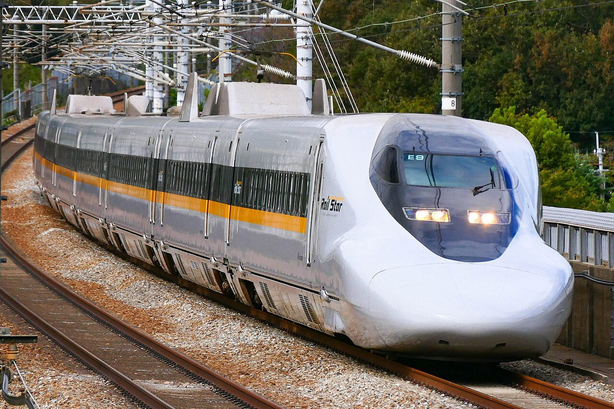
新大阪と博多のあいだを「ひかり」や「こだま」として走る8両の700系。ひかりレールスターの8号車には4人用の個室があるよ。
JRおでかけネット 700系（8両）（運行区間 新大阪〜博多、8号車に4人用個室。2026-10-04 確認）
写真：JRW Series700-7000-E9 Hikari592.jpg
作者：MaedaAkihiko
原典 ／ CC BY-SA 4.0
変更：Wikimedia提供の縮小画像（長辺1280px）を使用。トリミング・AI補正なし。
写真説明："Hikari Rail Star" No. 592 bound for Shin-Osaka by JR West's 700-7000 series E9 formation running between Okayama Station and Aioi Station on the Sanyo Shinkansen.
500系 こだま ― 新大阪駅
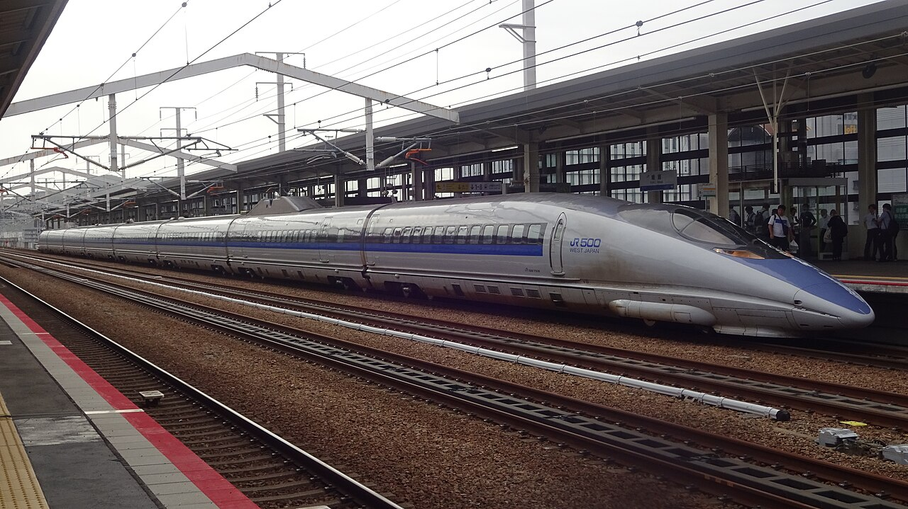
1997年にデビューしたときは、300km/hで走る日本でいちばん速い新幹線だったよ。いまは8両の「こだま」。2027年1月13日にふだんの運転を終える予定。写真は姫路駅に停まる新大阪行きのこだま（2023年）。
JR西日本 500系新幹線＆「ドクターイエロー」T5編成の引退について（2026年6月22日）・山陽新幹線の更なる安全性・快適性の向上（2024年7月24日）（2026-10-04 確認）
写真：500-V8.jpg
作者：Santetsu
原典 ／ CC BY 4.0
変更：Wikimedia提供の縮小画像（長辺1280px）を使用。トリミング・AI補正なし。
写真説明：A 500 series V formation stopping at Himeji Station as the Kodama train bound for Shin-Osaka.
0系 新幹線 ― 京都駅
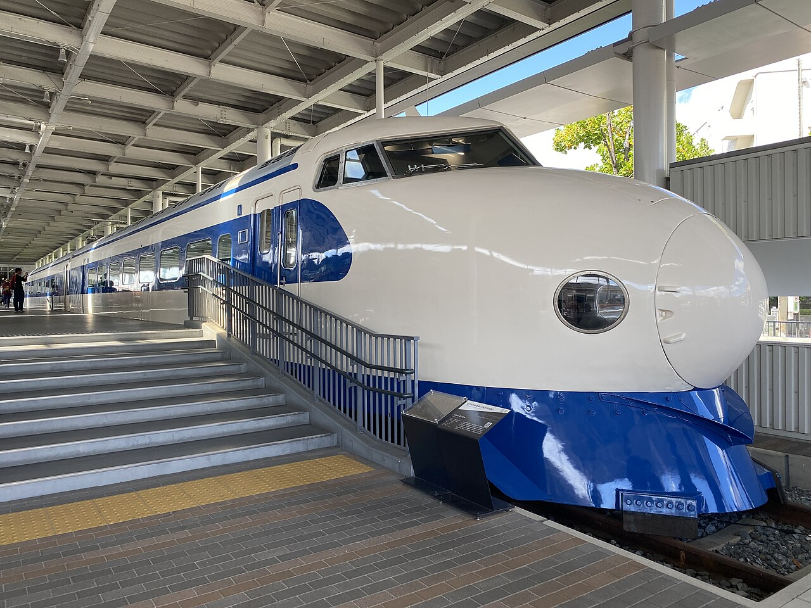
1964年に東海道新幹線が開業したときに走った、最初の新幹線。まるい鼻が目じるしで、最高210km/hで走ったよ。写真は京都鉄道博物館のプロムナードに展示されている21形1号車（2024年）。
京都鉄道博物館 本館 展示車両紹介（0系の展示。2026-10-05 確認。最高速度210km/hはゆかりさんの確認による）
写真：0 Series Shinkansen 21-1 Kyoto Railway Museum 20-09-2024.jpg
作者：BWard 1997
原典 ／ CC BY 4.0
変更：Wikimedia提供の縮小画像（長辺1280px）を使用。トリミング・AI補正なし。
写真説明：Car 21-1 from the iconic 0 Series Shinkansen class, the original high speed Bullet Train, on display outside in the Promenade area at the Kyoto Railway Museum.
ドクターイエロー 923形 ― 名古屋駅
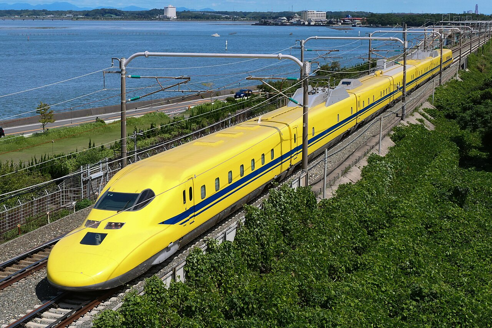
黄色い「新幹線のお医者さん」。約10日に一度、走りながら線路や電気の設備を調べていたよ。2025年1月に引退して、いまは名古屋のリニア・鉄道館で先頭車に会えるよ。写真は浜松〜豊橋を走るT4編成（2021年）。
JR東海 リニア・鉄道館 ドクターイエロー（T4編成）の車両展示について（2025年1月15日）・リニア・鉄道館 車両展示（2026-10-05 確認。最高速度270km/hはゆかりさんの確認による）
写真：Type923-T4.jpg
作者：MaedaAkihiko
原典 ／ CC BY-SA 4.0
変更：Wikimedia提供の縮小画像（長辺1280px）を使用。トリミング・AI補正なし。
写真説明：Shinkansen electric track comprehensive test car, 923 type T4 formation (Doctor Yellow) running between Hamamatsu and Toyohashi on the Tokaido Shinkansen.
N700S ― 静岡駅
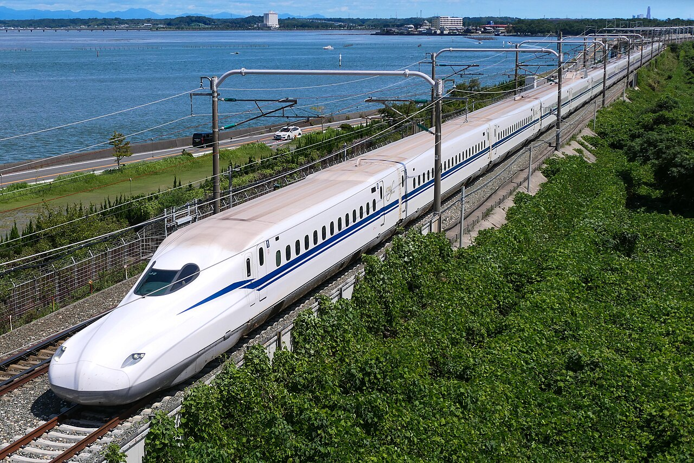
2020年にデビューした新しい新幹線。東海道新幹線では最高285km/h、山陽新幹線では300km/h。電気が止まっても、バッテリーで動けるしくみがあるよ。写真は浜名湖のそばを走るJ2編成（2021年）。
JR東海 車両のご案内 N700S（最高速度 東海道285km/h・山陽300km/h、2020年7月営業運転開始、バッテリ自走システム。2026-10-05 確認）
写真：Series-N700S-J2.jpg
作者：MaedaAkihiko
原典 ／ CC BY-SA 4.0
変更：Wikimedia提供の縮小画像（長辺1280px）を使用。トリミング・AI補正なし。
写真説明：N700S series J2 set belonging to JR Tokai, running between Hamamatsu and Toyohashi on the Tokaido Shinkansen.
E5系 はやぶさ ― 東京駅
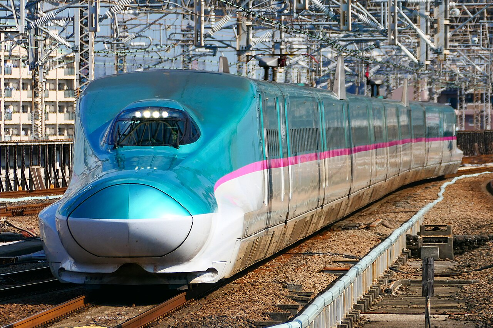
東京と東北・北海道を結ぶ「はやぶさ」。長い鼻が目じるしで、最高320km/hで走るよ。東京駅では東海道新幹線のとなりにやってくる。写真は大宮駅に入る東京行きのはやぶさ（2023年）。
JR東日本 E5系（最高速度320km/hはゆかりさんの確認による。2026-10-05）
写真：Series-E5-U44 Hayabusa-2.jpg
作者：MaedaAkihiko
原典 ／ CC BY-SA 4.0
変更：Wikimedia提供の縮小画像（長辺1280px）を使用。トリミング・AI補正なし。
写真説明："Hayabusa" No. 2 bound for Tokyo by E5 series U44 organization entering Omiya station of Tohoku Shinkansen.
200系 新幹線 ― 大宮駅
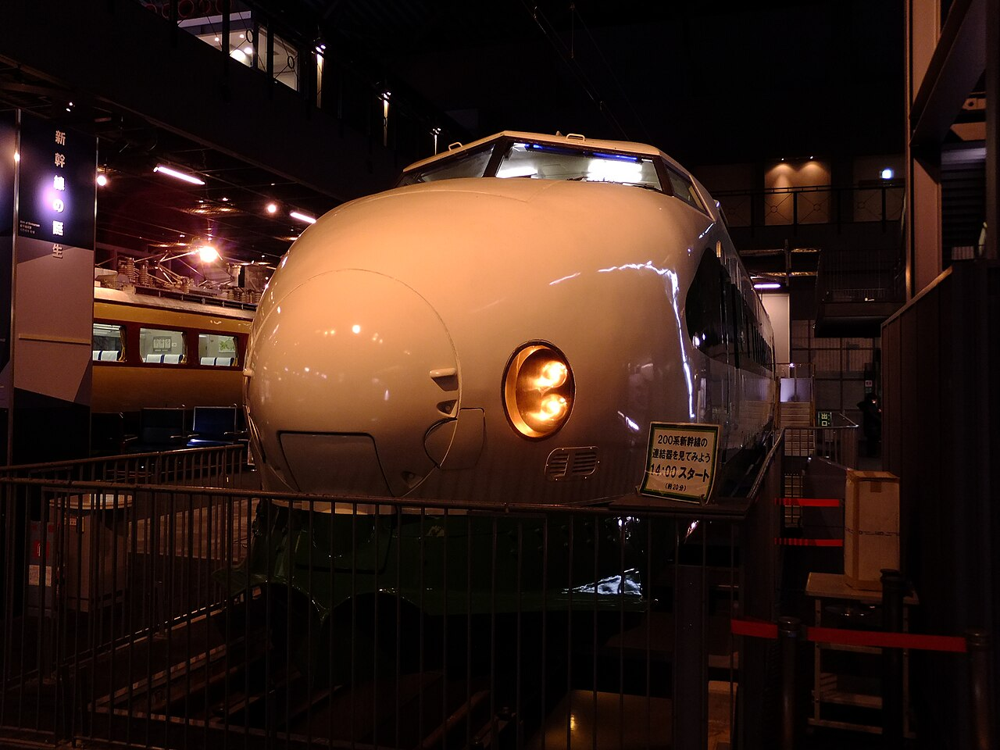
1982年に東北新幹線と上越新幹線が開業したときの車両。0系に似た丸い鼻と緑の線が目じるし。写真は大宮の鉄道博物館にある222形35号車。
乗りものニュース「200系新幹線」が引退した日（東北・上越新幹線の最初の車両）（2026-10-15 確認）
写真：Shinkansen 200 type-222 35 at the Railway Museum.jpg
作者：掬茶
原典 ／ CC BY-SA 4.0
変更：Wikimedia提供の縮小画像（長辺1280px）を使用。トリミング・AI補正なし。
写真説明：Former JR East 200 series shinkansen car 222-35 (ex-set K31) on display inside the Railway Museum in Saitama, Japan
E8系 つばさ ― 福島駅
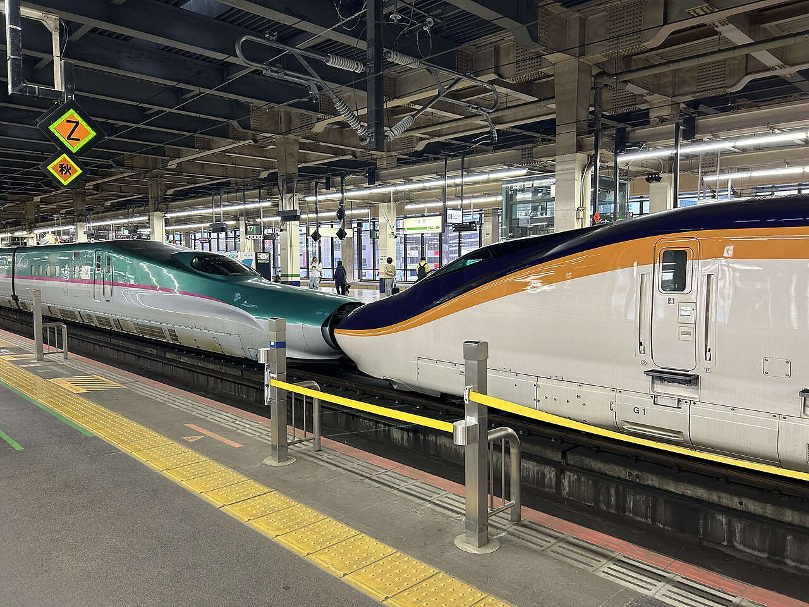
山形新幹線のつばさ。東京〜福島はやまびこと連結して走り、福島で切りはなして山形へ。最高300km/h。写真は大宮駅でE5系と連結して試運転するE8系（2023年）。山形新幹線を作るときに、終点で2枚目のカードを出す予定（ROADMAP 12）。
JR東日本 山形新幹線 E8系デビュー（2026-10-15 確認）
写真：E5系＋E8系 (大宮駅) 20231024.jpg
作者：営団総裁
原典 ／ CC BY-SA 4.0
変更：Wikimedia提供の縮小画像（長辺1280px）を使用。トリミング・AI補正なし。
写真説明：E5系(U46)とE8系(G1)による試運転列車。2023年10月24日大宮駅 〔列車番号9933B〕
E6系 こまち ― 盛岡駅
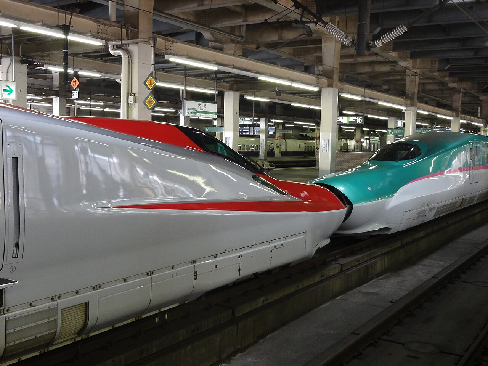
秋田新幹線のこまち。東京〜盛岡ははやぶさと連結して最高320km/hで走り、盛岡で切りはなして秋田へ。写真は大宮駅でE5系と連結したE6系（営業開始前の2012年）。秋田新幹線を作るときに、終点で2枚目のカードを出す予定（ROADMAP 12）。
JR東日本 E6系（2026-10-15 確認）
写真：E6-E5 Coupling in omiya 20120918.jpg
作者：Rsa
原典 ／ CC BY-SA 3.0
変更：Wikimedia提供の縮小画像（長辺1280px）を使用。トリミング・AI補正なし。
写真説明：新幹線E6系（秋田新幹線用）・E5系
H5系 はやぶさ ― 新函館北斗駅
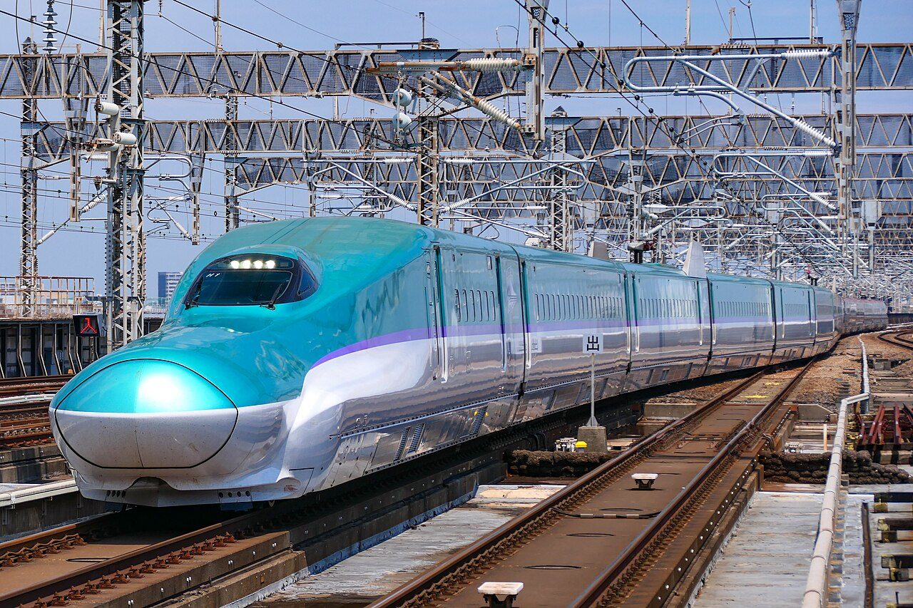
JR北海道のはやぶさ。形はE5系と同じで、まんなかの線がライラックやラベンダーを思わせる紫「彩香パープル」。ドアの横にシロハヤブサのマーク。写真は大宮駅に入る東京行きのはやぶさ（H1編成、2022年）。
JR北海道 北海道新幹線（2026-10-15 確認）
写真：JRH Series-H5 H1.jpg
作者：MaedaAkihiko
原典 ／ CC BY-SA 4.0
変更：Wikimedia提供の縮小画像（長辺1280px）を使用。トリミング・AI補正なし。
写真説明："Hayabusa" No. 10 bound for Tokyo, led by the H5 series H1 formation, entering Omiya Station on the Tohoku Shinkansen.
7200系 ― 坂出駅
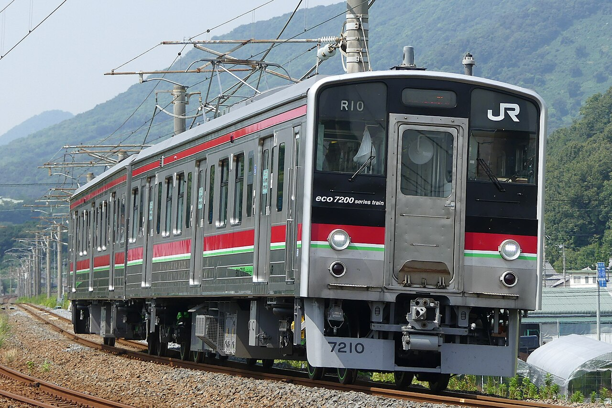
予讃線などを走るJR四国の普通電車。121系を大規模にリニューアルし、2016年6月から予讃線で運転。7000系との連結を考えて7200系に改めた。写真は讃岐府中〜国分を走るR10編成（2018年）。
JR四国 車両情報＜7200系電車＞（2026-10-18 確認）
写真：JR-Series7200-R10.jpg
作者：MaedaAkihiko
原典 ／ CC BY-SA 4.0
変更：Wikimedia提供の縮小画像（長辺1280px）を使用。トリミング・AI補正なし。
写真説明：予讃線の讃岐府中 - 国分間を走行するJR四国7200系（元・国鉄121系）R10編成
瀬戸大橋アンパンマントロッコ ― 高松駅
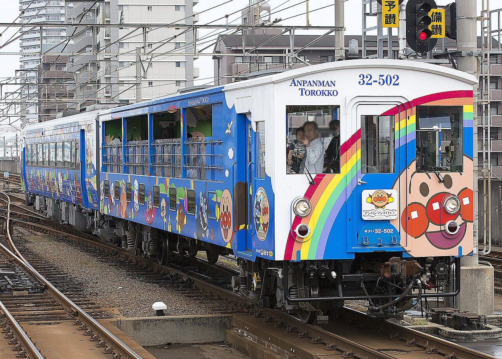
高松〜岡山（トロッコに乗れるのは坂出〜児島）と琴平〜岡山を、土休日や春・夏休みを中心に走る観光列車。2両編成で、1両は窓のないトロッコ車両、もう1両はアンパンマンと仲間たちでデザインした座席の車両。床には線路が見える窓がある。写真は宇多津駅のトロッコ車両キクハ32-502（2015年）。
JR四国 観光列車＜瀬戸大橋 アンパンマントロッコ＞（2026-10-18 確認）
写真：Anpanman torokko kikuha32 502+kiro185-26 utadu.jpg
作者：Spaceaero2
原典 ／ CC BY-SA 4.0
変更：Wikimedia提供の縮小画像（長辺1280px）を使用。トリミング・AI補正なし。
写真説明：アンパンマントロッコ キクハ32-502+キロ185-26 宇多津駅にて
車体のアンパンマンの絵：©やなせたかし／フレーベル館・ＴＭＳ・ＮＴＶ（写真のライセンスとは別に権利があります）
E7系 ― 北陸新幹線のはじめての開通
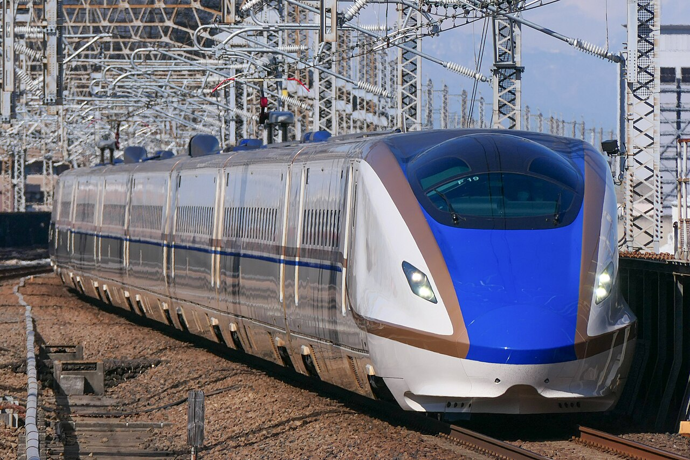
JR東日本の北陸新幹線の車両（かがやき・はくたか・つるぎ・あさま）。JR西日本のW7系といっしょに開発された。空色と、銅器をイメージした銅色の線。北陸新幹線での最高速度は260km/h。写真は大宮駅に入る東京行きのあさま（F19編成、2021年）。
たびりす「北陸新幹線E7系・W7系」（2012年の発表を伝える記事）（2026-10-20 確認）
写真：Series-E7-F19.jpg
作者：MaedaAkihiko
原典 ／ CC BY-SA 4.0
変更：Wikimedia提供の縮小画像（長辺1280px）を使用。トリミング・AI補正なし。
写真説明：Entering Omiya station, Hokuriku Shinkansen E7 series F19 formation "Asama" No. 614 bound for Tokyo
E2系 あさま ― 長野駅
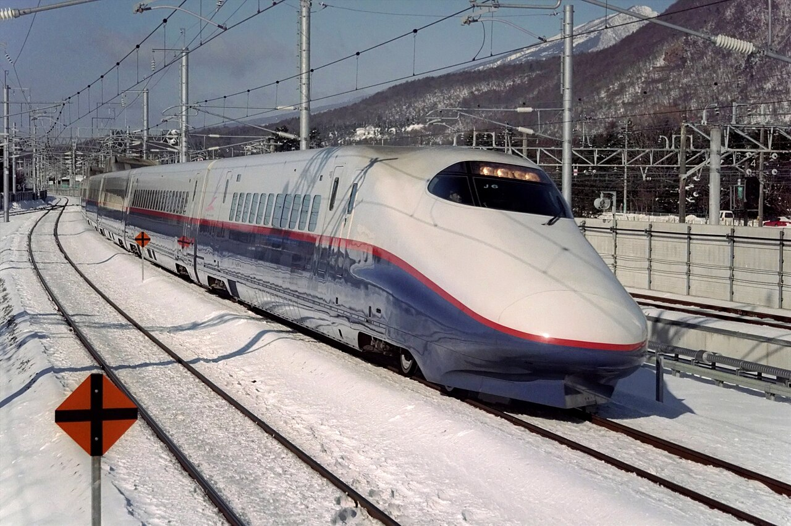
1997年に長野新幹線（いまの北陸新幹線の東京〜長野）が開業したときのあさま。抑速回生ブレーキで急な坂の碓氷峠を安全に下れた。2017年3月に引退。写真は1998年2月、雪の軽井沢駅に近づく上りのあさま（J6編成）。
乗りものニュース「長野新幹線開業に貢献 E2系「あさま」車両、2017年3月で引退」（2026-10-20 確認）
写真：E2 J6 Asama Karuizawa 19980218.jpg
作者：DAJF
原典 ／ CC BY-SA 3.0
変更：Wikimedia提供の縮小画像（長辺1280px）を使用。トリミング・AI補正なし。
写真説明：JR East E2 series shinkansen 8-car set J6 on an up Asama service approaching Karuizawa Station on the Nagano Shinkansen, 1998-02-18
East i（E926形） ― 金沢駅
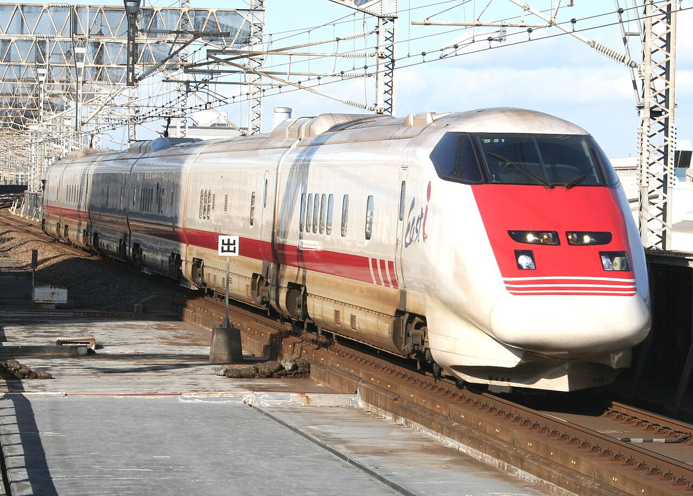
JR東日本の新幹線の検測車（線路や架線を調べる）。E3系をもとに2001年に作られ、「JR東日本のドクターイエロー」とも呼ばれる。2023年9月、開業前の金沢〜敦賀を試験で走った。開業後の2025年11月にも金沢駅で撮影されている（コモンズ「JR E926 kanazawa.jpg」）。写真は大宮駅に入るE926形（2011年）。
たびりす「East i」（2026-10-20 確認）
写真：E926 S51 East i Omiya 20110106.jpg
作者：Rsa
原典 ／ CC BY-SA 3.0
変更：Wikimedia提供の縮小画像（長辺1280px）を使用。トリミング・AI補正なし。
写真説明：大宮駅に入線する新幹線E926形電車（2011-01-06）
W7系 ― 敦賀駅
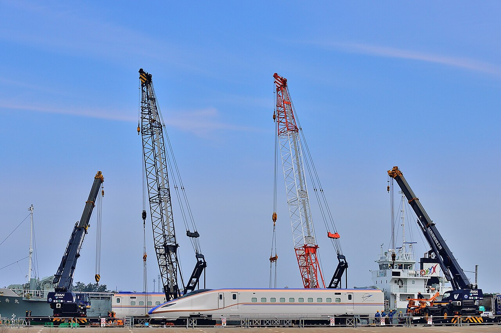
JR西日本の北陸新幹線の車両。JR東日本のE7系といっしょに開発され、見た目もほとんど同じ。最初のW7系（W1編成）は2014年4月、船で金沢港に着いて陸にあげられた（写真の説明による）。写真はそのときのもの。
たびりす「北陸新幹線E7系・W7系」（2026-10-20 確認）
写真：W7 series set W1 Kanazawa Port 20140413.jpg
作者：☆か～ず☆
原典 ／ CC BY 2.1 JP
変更：Wikimedia提供の縮小画像（長辺1280px）を使用。トリミング・AI補正なし。
写真説明：Cars of the first JR West W7 series shinkansen set, W1, being unloaded at Kanazawa Port (2014-04-13)
225系 ― 堅田駅
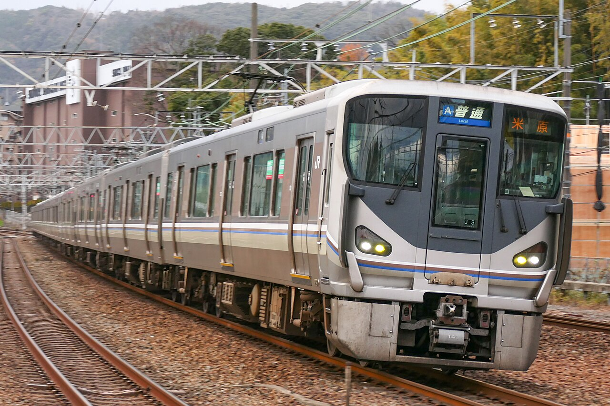
平成22年（2010年）にデビューし、京阪神地区でおもに新快速・快速で使われる車両（JR西日本）。写真は2021年、山崎駅に入る普通 米原行き（U3編成）。
JR西日本「ペーパークラフト 普通列車」の225系電車（デビュー年と使われ方。2026-10-25 確認）
写真：JR-Series225-0 U3.jpg
作者：MaedaAkihiko
原典 ／ CC BY-SA 4.0
変更：Wikimedia提供の縮小画像（長辺1280px）を使用。トリミング・AI補正なし。
写真説明：Local train bound for Maibara by 225-0 series U3 set entering Yamazaki Station on the Tokaido Main Line (JR Kyoto Line), 2021-12-25
321系 ― 高槻駅
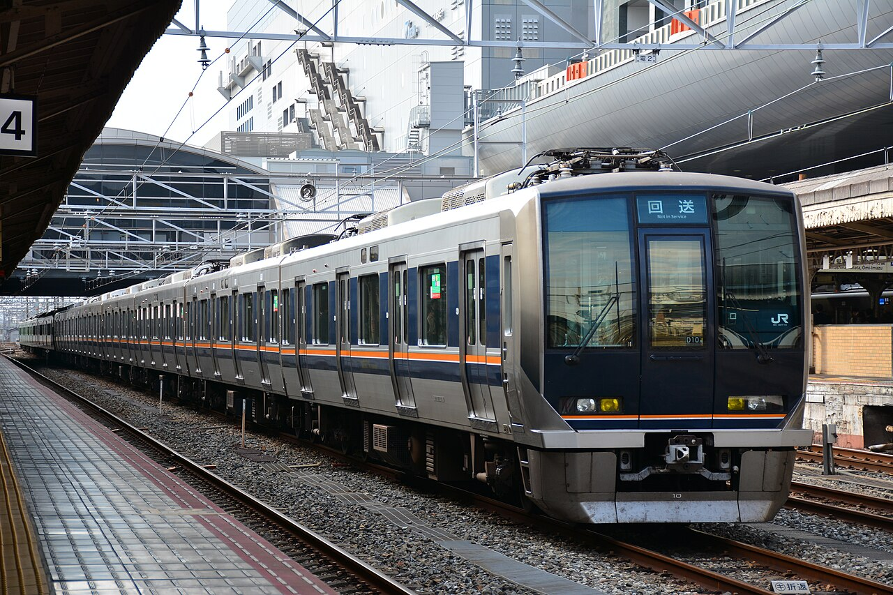
平成17年（2005年）にデビューし、京阪神地区でおもに普通電車で使われる車両（JR西日本）。写真は2019年の京都駅（回送）。
JR西日本「ペーパークラフト 普通列車」の321系電車（デビュー年と使われ方。2026-10-25 確認）
写真：JRW 321 out of service at Kyoto Station 2019-11-18 (50100725071).jpg
作者：Cheng-en Cheng from Taichung City, Taiwan
原典 ／ CC BY-SA 2.0
変更：Wikimedia提供の縮小画像（長辺1280px）を使用。トリミング・AI補正なし。
写真説明：JRW 321 out of service at Kyoto Station, 2019-11-18
521系 ― 新疋田駅
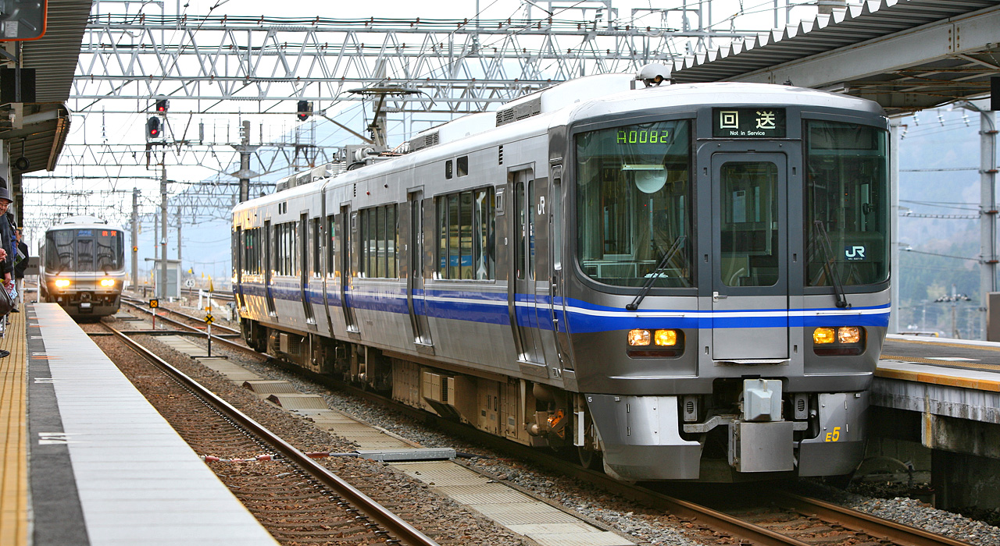
交流と直流の両方の電気で走れる近郊形電車（2006年登場）。いまは北陸本線の米原〜敦賀と、湖西線の近江今津〜近江塩津を走る（2026年3月時点、記事による）。写真は2008年の近江塩津駅。
ウィキペディア「JR西日本521系電車」（交直流両用と、走る区間。JR西日本の車両紹介ページは見つからなかった。2026-10-25 確認）
写真：JR West 521 series EMU 013.JPG
作者：Tennen-Gas
原典 ／ CC BY-SA 3.0
変更：Wikimedia提供の縮小画像（長辺1280px）を使用。トリミング・AI補正なし。
写真説明：JR West 521 series EMU at Ōmi-Shiotsu Station (From right: Kumoha 521-6 + Kuha 520-6), 2008-04-08
サンダーバード 683系8000番台 ― 近江今津駅
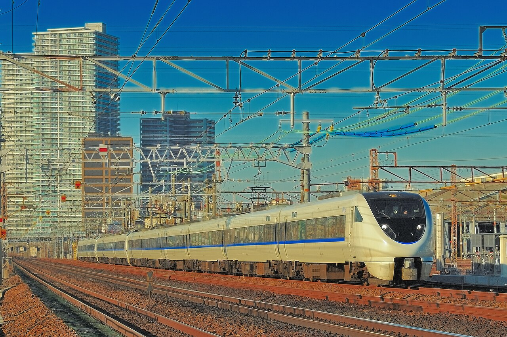
大阪〜敦賀の特急サンダーバード。流線形の先頭車がある「サンダーバード」用の683系は6両編成1本だけで、8000番台を名乗る。もとは北越急行が持っていた編成（記事による）。写真は2026年1月、高槻〜島本。
鉄道コム「サンダーバード」の車両のコラム（2026-07-26）（JR西日本の公式ページ（サンダーバード）には形式が書かれていない。段階1で選んだ写真（W33）は0番台で、0番台はいまは「しらさぎ」用（鉄道コム）のため、いまの車両の写真に替えた。2026-10-25 確認）
写真：リニューアル編成の683系8000番台.jpg
作者：乾英雄
原典 ／ CC BY 4.0
変更：Wikimedia提供の縮小画像（長辺1280px）を使用。トリミング・AI補正なし。
写真説明：リニューアル編成の683系8000番台。2026年1月10日 東海道本線 高槻～島本間
281系 特急はるか ― 京都駅
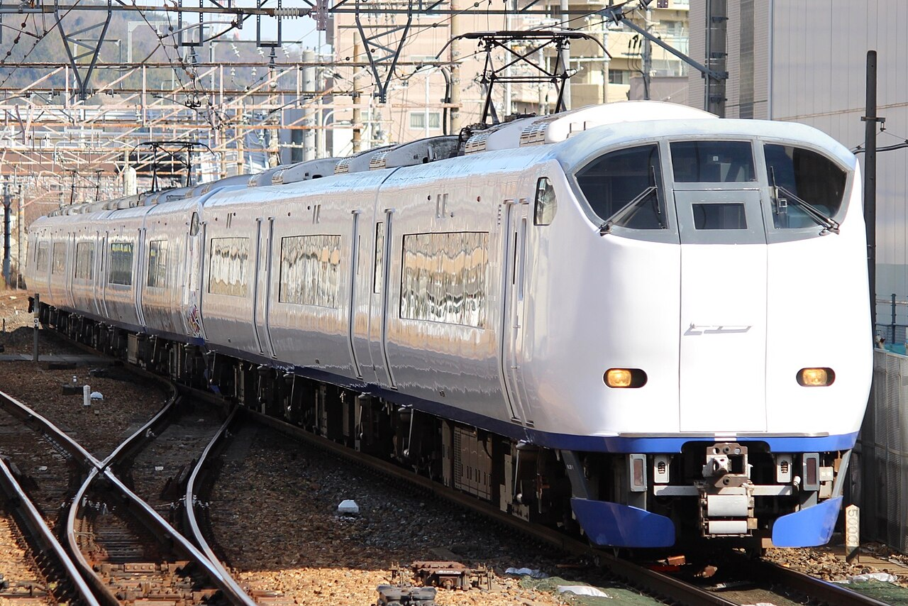
京都・新大阪などから関西空港へ向かう特急「はるか」。281系は平成6年（1994年）にデビュー（JR西日本）。停車駅に山科・京都・高槻・新大阪・大阪があることは JRおでかけネット「はるか」で確認。いまはハローキティの絵の編成が多いが、キャラクターの絵は写真のライセンスとは別の権利なので、ふつうの塗装の写真を選んだ。写真は2020年の高槻駅。
JR西日本「ペーパークラフト 特急列車」の はるか（デビュー年。2026-10-25 確認）
写真：JR West 281 series HA632+HA606 in Kyoto line.jpg
作者：Dragomaniaco
原典 ／ CC BY-SA 4.0
変更：Wikimedia提供の縮小画像（長辺1280px）を使用。トリミング・AI補正なし。
写真説明：関西空港特急はるか号 京都線高槻駅にて撮影（2020-03-29）
サンダーバード 683系4000番台 ― 大阪駅
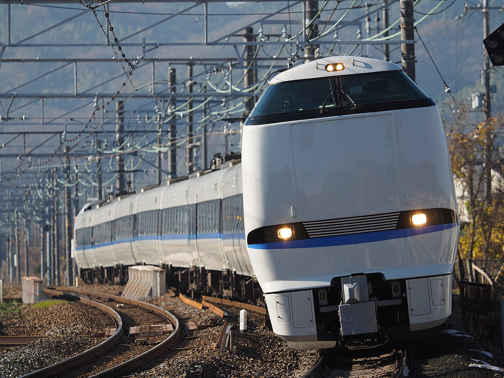
いまの「サンダーバード」は683系がほとんどで、多くの列車では両方の先頭が貫通型の車両（4000番台）が使われている（記事による）。写真は2015年、山崎駅の近く（コモンズの説明に「683-4000 series」）。
鉄道コム「サンダーバード」の車両のコラム（2026-07-26）（段階1で選んだ写真（V34）は0番台で、0番台はいまは「しらさぎ」用のため、4000番台の写真に替えた。2026-10-25 確認）
写真：683-4000 Thunderbird Yamazaki 20151220.jpg
作者：DMX123ZA
原典 ／ CC BY 2.5
変更：Wikimedia提供の縮小画像（長辺1280px）を使用。トリミング・AI補正なし。
写真説明：A refurbished JR West 683-4000 series EMU on a Thunderbird limited express service near Yamazaki Station (2015-12-20)
323系 ― 福島（大阪環状線）駅
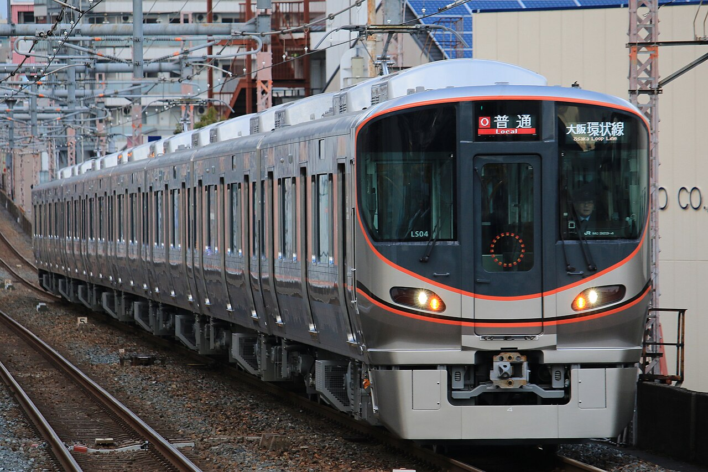
2016年12月24日にデビューした大阪環状線の車両。2019年に全編成の投入が終わり、大阪環状線・JRゆめ咲線の営業列車はすべて3扉車両になった。
JR西日本「新型車両323系の全編成の投入がついに完了！」（2019-05）（2026-10-28 確認）
写真：JR 323 momodani.jpg
作者：Jr223
原典 ／ CC BY-SA 4.0
変更：Wikimedia提供の縮小画像（長辺1280px）を使用。トリミング・AI補正なし。
写真説明：JR West 323 series EMU set LS04 approaching Momodani Station on the Osaka Loop Line (2016-12-28)
221系 大和路快速 ― 天王寺駅
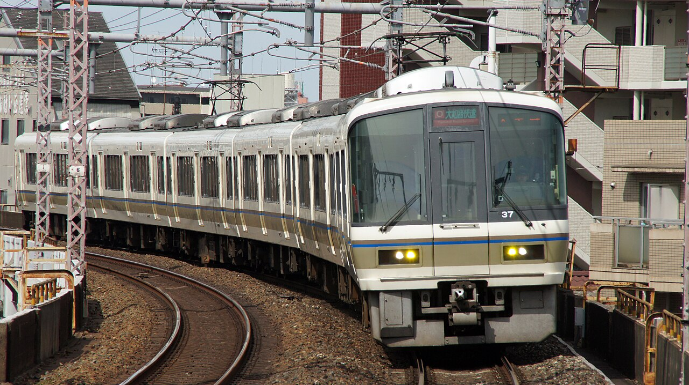
221系は1989年デビュー（JR西日本の普通列車のページ）。写真は大阪環状線を走る大和路快速 天王寺行き（コモンズの説明）。2026年2月の時点でも大和路快速で走っている（鉄道コムのコラム）。
JR西日本「普通列車」（2026-10-28 確認）
写真：JRW series221-37 OsakaLoop YamatojiRapid.jpg
作者：SEASONposter
原典 ／ CC BY-SA 4.0
変更：Wikimedia提供の縮小画像（長辺1280px）を使用。トリミング・AI補正なし。
写真説明：221系による大阪環状線の大和路快速 天王寺行き（2018-08-19）
223系 関空快速・紀州路快速 ― 京橋駅
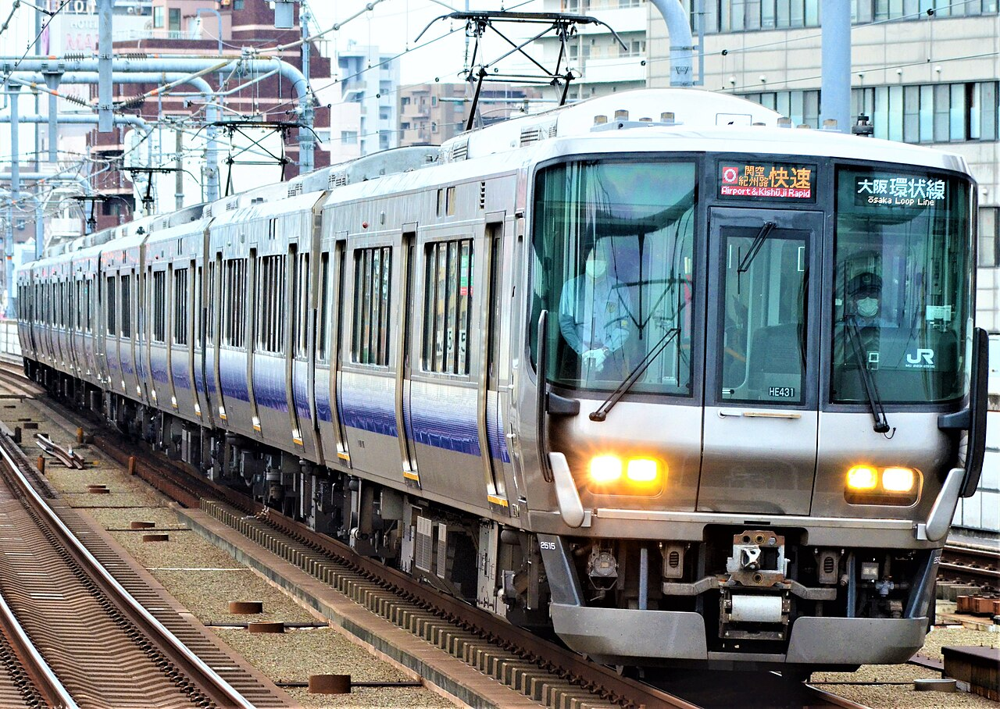
関空快速・紀州路快速は大阪環状線から阪和線に入って関西空港・和歌山へ向かう（JR西日本の大阪環状線の発表資料）。写真は関空・紀州路快速に使われる223系2500番台（コモンズの説明）。
JR西日本 大阪環状線のダイヤ改正の資料（2015-01-15）（2026-10-28 確認）
写真：223系2500番台簡易体質改善.jpg
作者：模型鉄
原典 ／ CC BY-SA 4.0
変更：Wikimedia提供の縮小画像（長辺1280px）を使用。トリミング・AI補正なし。
写真説明：関空紀州路快速の運用に就く223系2500番台 HE431（2022-08-13）
スーパーレールカーゴ M250系 ― 安治川口駅
JR貨物の特急コンテナ電車。最高速度130km/h、東海道線（東京貨物ターミナル〜安治川口）で運行し、佐川急便が専用で使っている（JR貨物）。2004年に誕生し、東京〜大阪間を毎日往復している（佐川急便、2026-08-24）。車体の「SAGAWA」の文字は本物の塗装の一部（公開の前に扱いを確認する）。
JR貨物「車両の開発について」（2026-10-28 確認）
写真：Mc250-3.jpg
作者：Sakurayama 7
原典 ／ CC BY-SA 4.0
変更：Wikimedia提供の縮小画像（長辺1280px）を使用。トリミング・AI補正なし。
写真説明：大船駅に近づく上りスーパーレールカーゴ。先頭はMc250-3。（2020-07-16）
813系 ― 鹿児島本線をはじめて開通したとき
博多・北九州の鹿児島本線などを走る近郊形の交流電車。1994年に登場。写真は博多駅の門司港行き R108編成（2026年）。
鉄道チャンネル JR九州 813系のロングシート化（JR九州の発表を伝える記事。登場年と走る区間。JR九州の車両紹介ページは見つからなかった。2026-10-07 確認）
写真：813系R108編成(赤屋根).jpg
作者：画像提供依頼をやりたいだけ
原典 ／ CC BY 4.0
変更：Wikimedia提供の縮小画像（長辺1280px）を使用。トリミング・AI補正なし。
写真説明：博多駅にて
BEC819系 DENCHA ― 香椎駅
架線のある区間でバッテリーに電気をため、架線のない区間はその電気で走る蓄電池電車。香椎線では2019年3月16日のダイヤ改正から全列車が DENCHA になった（香椎駅に充電の設備）。写真の撮影場所は書かれていない（2021年）。
乗りものニュース 蓄電池電車「DENCHA」、非電化の香椎線に進出（JR九州の2018年12月14日の発表を伝える記事）・JR九州 環境報告（しくみ。2026-10-07 確認）
写真：JR Kyushu KumohaBEC819-106.jpg
作者：Rsa
原典 ／ CC BY-SA 3.0
変更：Wikimedia提供の縮小画像（長辺1280px）を使用。トリミング・AI補正なし。
写真説明：JR九州BEC819系電車
821系 ― 福間駅
2019年3月16日に鹿児島本線の小倉〜荒尾でデビューした近郊形の交流電車。制御装置に炭化ケイ素（SiC）の半導体を使い、415系にくらべて消費電力量を約70%へらした。写真は竹下駅で、うしろは811系。
乗りものニュース 新型821系電車、3月16日デビュー（JR九州の2019年2月6日の発表を伝える記事。2026-10-08 確認）
写真：JR Kyushu 821 Series & 811 Series.jpg
作者：こはるん
原典 ／ CC BY-SA 4.0
変更：Wikimedia提供の縮小画像（長辺1280px）を使用。トリミング・AI補正なし。
写真説明：鹿児島本線竹下駅、821系と811系(リニューアル車)の併結
JR貨物 EF510形300番台（ECO-POWER レッドサンダー） ― 黒崎駅
九州の貨物列車をひく交直流電気機関車。ED76形・EF81形の置きかえとして、2023年3月から九州で走りはじめた。銀色の車体で、愛称は「ECO-POWER レッドサンダー」。写真は日豊本線（2024年）。
鉄道チャンネル EF510形301号機を来春投入（JR貨物の2021年の発表を伝える記事。2026-10-08 確認）
写真：JRF EF510-301 Nippo-main-Line.jpg
作者：MaedaAkihiko
原典 ／ CC0
変更：Wikimedia提供の縮小画像（長辺1280px）を使用。トリミング・AI補正なし。
写真説明：日豊本線 高城〜鶴崎間を走る EF510-301 のコンテナ列車
883系 特急ソニック ― 小倉駅
小倉を通って博多と大分をむすぶ特急「ソニック」の青い車両。2026年6月25日の JR九州「鉄道アップデート計画」で、2027年春ごろから客室をリニューアルする予定。写真は鹿児島本線の枝光駅（2018年）。
JR九州 特急ソニック・乗りものニュース 鉄道アップデート計画（2026-10-08 確認）
写真：L Kagoshima 883.jpg
作者：東風みるく
原典 ／ CC BY-SA 4.0
変更：Wikimedia提供の縮小画像（長辺1280px）を使用。トリミング・AI補正なし。
写真説明：JR鹿児島本線枝光駅で撮影
800系 くまモンアドベンチャー号 ― 熊本駅
熊本デスティネーションキャンペーンにあわせて、2026年7月18日から10月12日まで九州新幹線（博多〜熊本・鹿児島中央）を走った特別なラッピングの800系（U006編成）。先頭のとがった部分を、くまモンの黒い鼻に見立てている。写真は家族旅行のとき博多駅で撮影（2026年10月）。くまモンの絵は写っていない正面の写真を使い、運転画面でも くまモンの絵は描いていない（色と模様だけ）。
JR九州 くまモンアドベンチャー号・乗りものニュース（運行開始日。2026-10-13 確認）
写真：家族撮影の くまモンアドベンチャー号.jpg
作者：家族撮影
原典 ／ 家族提供写真
変更：撮影者提供の写真を長辺1280pxへ縮小し、写っている人（乗務員・ほかのホームの人）にモザイク。撮影情報（位置情報など）を削除。トリミング・AI補正・描き換えなし。
写真説明：博多駅に停車中の800系U006編成「くまモンアドベンチャー号」の正面
800系 つばめ ― 鹿児島中央駅
九州新幹線だけを走る6両の新幹線。2004年の新八代〜鹿児島中央の開業でデビュー。木や西陣織を使った和風の車内。写真は熊本駅に入る鹿児島中央行きの「つばめ325号」（U001編成、2022年）。
乗りものニュース 九州新幹線「800系」どんな車両？（JR九州の車両紹介ページは見つからなかった。2026-10-13 確認）
写真：Series800 U001.jpg
作者：MaedaAkihiko
原典 ／ CC BY-SA 4.0
変更：Wikimedia提供の縮小画像（長辺1280px）を使用。トリミング・AI補正なし。
写真説明："Tsubame" No. 325 bound for Kagoshima Chuo by JR Kyushu 800 series U001 set entering Kumamoto station.
いまは使っていない写真
広電の線路ができたら戻す車両と、入れかえた前の写真です（2026-09-27 からアプリには出していません）。500系は2026-10-04に山陽新幹線と一緒に戻し、写真は新しいもの（上の「500系 こだま」）にしました。
500系新幹線
広島駅には、山陽新幹線もやってくるよ。これは新幹線の500系。在来線とは別の線路を走るよ。
車両・地域の参考資料
写真：JR West 500 series shinkansen set V8 at Hakata Station 20200115.jpg
作者：Rick888chen
原典 ／ CC BY-SA 4.0
変更：Wikimedia提供の縮小画像を使用。写真の描き換えなし。
写真説明：JR West 500 series shinkansen set V8 at Hakata Station
広島電鉄5200形 Greenmover APEX
2019年、広電宮島口駅で出発式をしてデビューした路面電車。5つの車体がつながっているよ。
車両の参考資料（マイナビニュース 2019年3月14日） ／ 近畿車輛
写真：Hiroden Series5200-5205B Ekimae-route-HM.jpg
作者：MaedaAkihiko
原典 ／ CC0
変更：Wikimedia提供の縮小画像（長辺1280px）を使用。トリミング・AI補正なし。
写真説明：A train bound for Nishi-Hiroshima, operated by 5200 series 5205 set, runs between Takanobashi Station and Shiyakusho-mae Station on the Hiroshima Electric Railway Ujina Line.
キハ40形（広島色）
芸備線にゆかりのあるディーゼル車。写真は2004年の広島色。昔のすがたも集めよう。
車両・地域の参考資料
写真：Jrw-dc40-hiroshima.jpg
作者：Taisyo
原典 ／ CC BY 3.0
変更：Wikimedia提供画像を使用。トリミング・AI補正なし。
写真説明：2004年6月本人撮影
40系気動車
駅スタンプの名所の絵
写真を使わない自作の線画です。名所と駅の結びつきは以下で確認しました（確認日：2026-09-26）。赤瓦の町家の屋根、シロヘビの目と舌、ツルの頭だけ赤でえがいています。
効果音
駅スタンプを押す音（Hand-Foley-Pat01-1(Strong)）と、押したあとのキラーン（Bell_Accent16-2(Low)）。
音源：OtoLogic ／ CC BY 4.0（利用規約の確認日：2026-09-26）
変更：ファイル名だけ変更（assets/sound/stamp-press.mp3、stamp-kira-low.mp3）。音の加工なし。アプリ内で音量と鳴らすタイミングを調整。
けいさんの 正解の音（Inspiration06-1(Low)）と、まちがえたときの「もう一回」の音（Retro_Anime-System09-1）。
音源：OtoLogic ／ CC BY 4.0
変更：ファイル名だけ変更（assets/sound/correct-2.mp3、retry.mp3）。音の加工なし。
車両カードを ゲットしたときのキラーン（Bell_Accent14-1(High)）とジャジャーン（Phrase01-1）。もじ鉄図鑑と同じ音です。
音源：OtoLogic ／ CC BY 4.0
変更：ファイル名だけ変更（assets/sound/card-kira.mp3、card-jajaan.mp3）。音の加工なし。アプリ内で音量と鳴らすタイミングを調整。
家族撮影写真
Kizashi・はなあかり・カープ応援ラッピング・ばらのラッピング・くまモンアドベンチャー号の家族撮影写真を本アプリで使用しています。縮小・トリミング（カープは動画の1コマの切り出し）、写っている人へのモザイク（はなあかり・ばら・くまモンアドベンチャー号）、撮影情報の削除だけで、AI補正・描き換えはしていません。


.jpg){kind=link}


.jpg){kind=link}


.jpg){kind=link}


_20231024.jpg){kind=link}


.jpg){kind=link}


.jpg){kind=link}